Nhai (mastication) là quá trình nhai, xé và nghiền thức ăn bằng răng. Quá trình cơ học này, là bước đầu tiên của tiêu hóa, bao gồm sự tương tác giữa hệ thần kinh trung ương, các cơ nhai, răng, lưỡi và cặp khớp thái dương–hàm (temporomandibular joints — TMJs). Các khớp này tạo thành điểm trục giữa hàm dưới (xương hàm dưới — mandible) và đáy hộp sọ. Khớp thái dương–hàm là một trong những khớp quan trọng và được sử dụng liên tục nhất trong cơ thể, không chỉ trong khi nhai mà còn trong khi nuốt và khi nói. Vì vậy, đau liên quan đến chức năng suy giảm của khớp thái dương–hàm có thể ảnh hưởng đáng kể đến sức khỏe và sự an lạc tổng thể của một người. Can thiệp lâm sàng hiệu quả đối với các rối loạn đau của vùng giải phẫu thường phức tạp này đòi hỏi một sự hiểu biết vững chắc về động học của khớp thái dương–hàm và vùng sọ–cổ xung quanh. Phần đầu của chương này tập trung vào động học của các khớp thái dương–hàm trong khi nhai.
Hình 11.1 nêu bật một số giải phẫu bề mặt liên quan đến khớp thái dương–hàm. Mỏm cầu hàm (mandibular condyle) nằm khít trong hố hàm dưới (mandibular fossa) của xương thái dương. Có thể sờ nắn mỏm cầu hàm ngay phía trước ống thính ngoài (external auditory meatus) — tức là lỗ mở vào trong tai. Chỗ bám gần phía sọ của cơ thái dương lấp đầy một vùng rộng và hơi lõm của hộp sọ được gọi là hố thái dương (temporal fossa). Các xương thái dương, xương đỉnh, xương trán, xương bướm và xương gò má đều góp phần tạo nên hố thái dương.
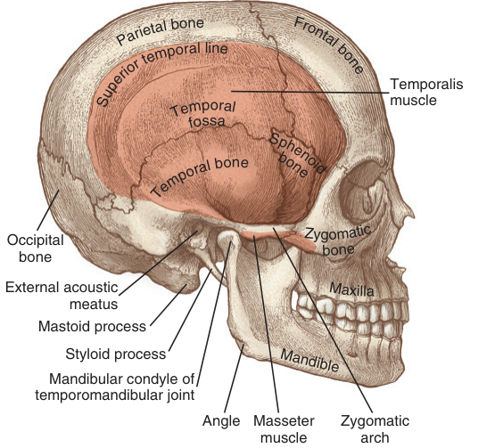
Các giải phẫu bề mặt khác liên quan đến khớp thái dương–hàm gồm mỏm chũm (mastoid process) của xương thái dương, góc hàm dưới và cung gò má (zygomatic arch). Cung gò má được tạo thành do sự hợp nhất giữa mỏm gò má của xương thái dương và mỏm thái dương của xương gò má.
Xương hàm dưới, xương hàm trên, xương thái dương, xương gò má, xương bướm và xương móng đều liên quan đến cấu trúc hay chức năng của khớp thái dương–hàm.
Xương hàm dưới (Mandible)
Xương hàm dưới là xương lớn nhất trong các xương mặt (xem Hình 11.1). Đây là một xương rất di động, được treo lơ lửng từ hộp sọ nhờ các cơ, dây chằng và bao khớp của khớp thái dương–hàm. Các cơ nhai bám trực tiếp hoặc gián tiếp vào xương hàm dưới. Sự co cơ định vị các răng cài trong xương hàm dưới áp sát chắc chắn vào các răng cài trong xương hàm trên được cố định.
Hai phần chính của xương hàm dưới là thân (body) và hai nhánh (rami) (Hình 11.2). Thân — phần nằm ngang của xương — nhận 16 răng vĩnh viễn phía dưới của người trưởng thành (Hình 11.3). Các nhánh của xương hàm dưới nhô thẳng đứng lên từ mặt sau của thân (xem Hình 11.2). Mỗi nhánh có một mặt ngoài và một mặt trong, cùng với bốn bờ. Bờ sau và bờ dưới của nhánh gặp nhau ở góc hàm dưới dễ dàng sờ thấy. Cơ cắn (masseter) và cơ pterygoid trong (medial pterygoid) — hai cơ nhai rất khỏe — có các chỗ bám tương tự nhau ở vùng góc hàm dưới.
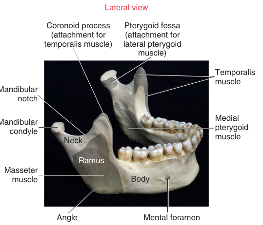
Ở đầu trên của nhánh là mỏm vẹt (coronoid process), mỏm cầu hàm và khuyết hàm dưới (mandibular notch). Mỏm vẹt là một mỏm nhô bằng xương mỏng hình tam giác, kéo dài hướng lên từ bờ trước của nhánh. Mỏm này là chỗ bám dưới chính của cơ thái dương. Mỏm cầu hàm kéo dài hướng lên từ bờ sau của nhánh. Mỏm cầu hàm tạo thành thành phần xương lồi của khớp thái dương–hàm. Kéo dài giữa mỏm vẹt và mỏm cầu hàm là khuyết hàm dưới. Cổ hàm dưới (mandibular neck) là một vùng hơi bị thắt lại nằm ngay dưới mỏm cầu hàm. Cơ pterygoid ngoài (lateral pterygoid) bám vào mặt trước–trong của cổ hàm dưới, trong một chỗ lõm gọi là hố pterygoid (pterygoid fossa) (Hình 11.2 và 11.4).
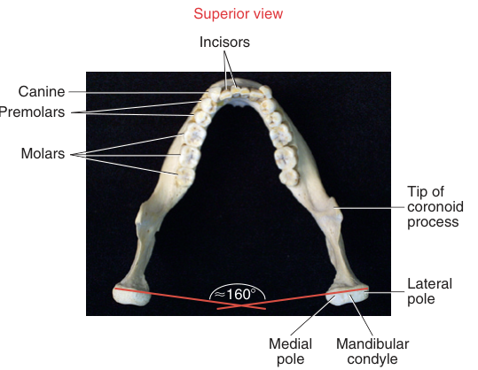
Xương hàm trên (Maxilla)
Hai xương hàm trên phải và trái hợp nhất để tạo thành một xương hàm trên (maxilla) duy nhất, tức hàm trên. Xương hàm trên được cố định trong hộp sọ qua các khớp nối cứng với các xương kế cận (xem Hình 11.1). Xương hàm trên kéo dài hướng lên trên, tạo thành sàn của khoang mũi và hốc mắt. Các phần nằm ngang phía dưới của xương hàm trên nhận các răng trên.
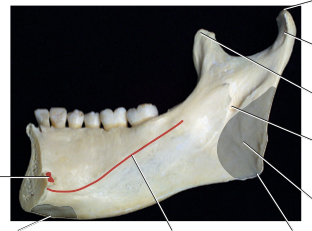
Xương thái dương (Temporal Bone)
Có hai xương thái dương — một ở mỗi bên hộp sọ. Hố hàm dưới tạo thành chỗ lõm xương của khớp thái dương–hàm, được làm nổi bật trong hình nhìn bên ở phần dưới của Hình 11.5. Điểm cao nhất của hố là vòm (dome), thường rất mỏng và dạng màng (xem hình minh họa chính trong Hình 11.5). Hố được giới hạn ở phía trước bởi gồ khớp (articular eminence) và ở phía sau bởi củ sau khớp hàm (postglenoid tubercle) và phần nhĩ của xương thái dương. Khi há miệng hết cỡ, các mỏm cầu hàm của xương hàm dưới trượt về trước và xuống dưới qua cặp gồ khớp dốc.
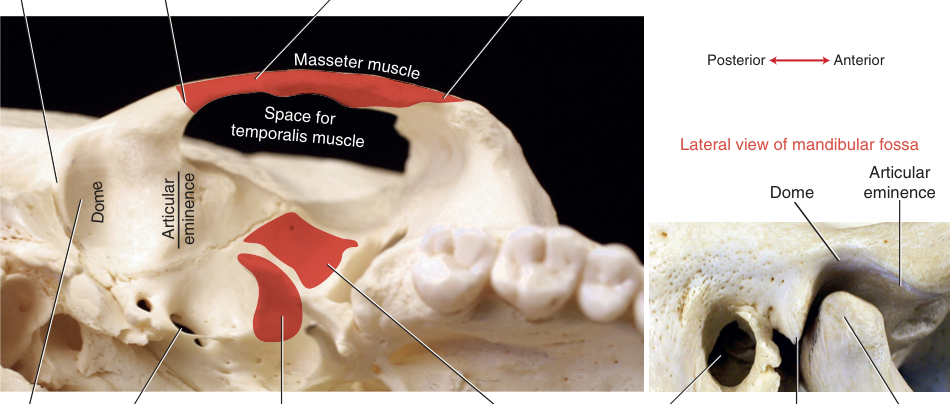
Mỏm trâm (styloid process) là một phần nhô xương dài và thon mảnh, nhô ra từ mặt dưới của xương thái dương (xem Hình 11.1). Mỏm nhọn này làm chỗ bám cho dây chằng trâm hàm (stylomandibular ligament) (sẽ được bàn đến sau) và ba cơ nhỏ (cơ trâm lưỡi, cơ trâm móng và cơ trâm hầu). Mỏm gò má của xương thái dương tạo thành nửa sau của cung gò má (xem hình minh họa chính trong Hình 11.5).
Xương gò má (Zygomatic Bone)
Cả hai xương gò má phải và trái cấu tạo nên phần lớn hai bên má và phần ngoài các hốc mắt (xem Hình 11.1). Mỏm thái dương của xương gò má góp phần tạo thành nửa trước của cung gò má (xem Hình 11.5). Phần lớn cơ cắn bám vào xương gò má và cung gò má kế cận.
Xương bướm (Sphenoid Bone)
Mặc dù xương bướm không góp phần tạo nên cấu trúc của khớp thái dương–hàm, xương này cung cấp các chỗ bám gần cho cơ pterygoid trong và cơ pterygoid ngoài. Khi được đặt khớp nối trong hộp sọ, xương bướm nằm ngang qua nền sọ. Các đặc điểm xương học liên quan của xương bướm là cánh lớn, mảnh cánh trong và mảnh cánh ngoài (Hình 11.6). Khi một đoạn cung gò má được cắt bỏ, các mặt ngoài của cánh lớn và mảnh cánh ngoài được lộ ra (Hình 11.7).
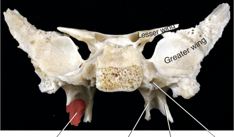
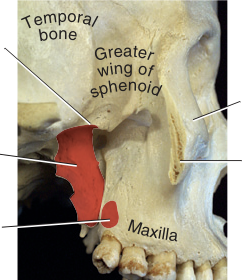
Các đặc điểm xương học liên quan của xương bướm (Relevant Osteologic Features of the Sphenoid Bone)
Các đặc điểm xương học liên quan của xương thái dương (Relevant Osteologic Features of the Temporal Bone)
Xương móng (Hyoid Bone)
Xương móng là một xương hình chữ U có thể được sờ nắn ở nền cổ, ngay phía trước thân của đốt sống cổ thứ ba (Hình 11.8). Thân của xương móng lồi về phía trước. Hai sừng lớn ở hai bên tạo thành các mặt bên hơi cong của xương. Xương móng được treo lơ lửng chủ yếu nhờ một cặp dây chằng trâm móng (stylohyoid ligaments) hai bên. Một số cơ tham gia vào việc di chuyển lưỡi, nuốt và phát âm bám vào xương móng (xem Hình 11.21).
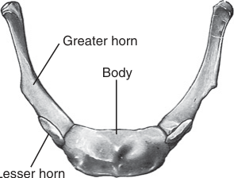
Răng (Teeth)
Xương hàm trên và xương hàm dưới mỗi bên chứa 16 răng vĩnh viễn (xem Hình 11.3 để biết tên các răng dưới). Cấu trúc của mỗi răng phản ánh chức năng của nó trong việc nhai (Bảng 11.1).
Mỗi răng có hai phần cơ bản: thân răng (crown) và chân răng (root) (Hình 11.9). Bình thường, thân răng được phủ bằng men răng (enamel) và nằm phía trên nướu (gingiva). Chân răng của mỗi răng được cài vào trong một lớp xương ổ răng (alveolar bone) tương đối dày. Các dây chằng nha chu (periodontal ligaments) giúp gắn các chân răng vào trong các ổ răng của chúng.
Các mút (cusps) là những gờ hình nón nhô lên trên mặt của một chiếc răng. Khớp cắn mút tối đa (maximal intercuspation) mô tả vị trí của xương hàm dưới khi các mút của các răng đối diện tiếp xúc với nhau ở mức tối đa. Thuật ngữ này được dùng thay thế cho khớp cắn tâm (centric occlusion). Quan hệ tâm (centric relation) mô tả vị trí nghỉ tương đối của các mặt khớp trong khớp thái dương–hàm. Tư thế nghỉ thả lỏng của xương hàm dưới cho phép một “khoảng trống tự do” (freeway space) nhỏ — tức khoảng hở liên răng (inter-occlusal clearance) — giữa các răng trên và các răng dưới. Bình thường, các răng chỉ tiếp xúc với nhau (khớp cắn) trong khi nhai và nuốt.
| Tên (Names) | Chức năng (Functions) | Số lượng (Numbers) | Đặc điểm cấu trúc (Structural Characteristics) |
|---|---|---|---|
| Các răng cửa (Incisors) | Cắt thức ăn | Hàm trên, 4 Hàm dưới, 4 | Các cạnh sắc |
| Các răng nanh (Canines) | Xé thức ăn | Hàm trên, 2 Hàm dưới, 2 | Các răng vĩnh viễn dài nhất; thân răng chỉ có một mút |
| Các răng tiền hàm (Premolars) | Nghiền thức ăn | Hàm trên, 4 Hàm dưới, 4 | Thân răng có hai mút (răng hai mút — bicuspid); răng tiền hàm thứ hai bên dưới có thể có ba mút |
| Các răng hàm (Molars) | Nghiền nát thức ăn thành các hạt nhỏ để nuốt | Hàm trên, 6 Hàm dưới, 6 | Thân răng có bốn hoặc năm mút |
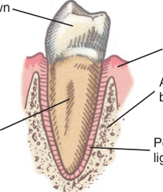
Khớp thái dương–hàm (TMJ) là một khớp nối tương đối lỏng lẻo được tạo thành giữa mỏm cầu hàm và hố hàm dưới của xương thái dương (xem Hình 11.1 và Hình 11.5, hình minh họa bên phải). Đây là một khớp hoạt dịch cho phép một tầm xoay rộng cũng như sự trượt (translation). Một đĩa khớp làm đệm cho các lực có thể rất lớn và lặp đi lặp lại vốn đặc trưng của việc nhai. Đĩa khớp tách khớp thành hai ổ khớp hoạt dịch (Hình 11.10). Ổ khớp dưới nằm giữa mặt dưới của đĩa khớp và mỏm cầu hàm. Ổ khớp trên lớn hơn nằm giữa mặt trên của đĩa khớp và đoạn xương được tạo thành bởi hố hàm dưới và gồ khớp.
Mỏm cầu hàm (Mandibular Condyle)
Mỏm cầu hàm bị dẹt theo chiều từ trước ra sau, với chiều dài trong–ngoài của nó dài gấp đôi chiều dài trước–sau (xem Hình 11.3). Mỏm cầu hàm nhìn chung là lồi, có các mỏm ngắn được gọi là cực trong và cực ngoài (medial and lateral poles). Cực trong thường nổi bật hơn cực ngoài. Trong khi miệng đang mở và đóng, mép ngoài của cực ngoài có thể được sờ nắn như một điểm nằm dưới da, ngay phía trước ống thính ngoài.
Mặt khớp của mỏm cầu hàm được lót bằng một lớp sụn sợi (fibrocartilage) mỏng nhưng dày đặc. Mô này hấp thụ các lực liên quan đến việc nhai tốt hơn sụn trong (hyaline cartilage), và nó có một quá trình sửa chữa vượt trội. Cả hai chức năng này đều quan trọng, xét đến những yêu cầu phi thường mà khớp thái dương–hàm phải gánh chịu.
Hố hàm dưới (Mandibular Fossa)
Hố hàm dưới của xương thái dương được chia thành hai mặt: mặt khớp và mặt không khớp (nonarticular). Mặt khớp của hố được tạo thành bởi gồ khớp, chiếm bờ trước dốc của hố (xem Hình 11.5 và 11.10). Gồ khớp hoạt động như một mặt chịu tải và do đó gồm xương đặc (compact bone) dày, được lót bằng sụn sợi. Việc há miệng hết cỡ đòi hỏi mỗi mỏm cầu hàm phải trượt về phía trước qua gồ khớp. Lực trượt (shear) và lực ép (compression) quá mức tại mặt tiếp giáp này về sau có thể gây vỡ mảnh sụn sợi — một dấu hiệu phổ biến của viêm khớp thoái hóa sớm tại khớp thái dương–hàm.
Độ dốc của gồ khớp, tính trung bình, là 55 độ so với mặt phẳng ngang. Mức dốc này một phần quyết định đường đi động học của mỏm cầu hàm trong quá trình mở và đóng miệng.
Mặt không khớp của hố hàm dưới gồm một lớp xương và sụn sợi rất mỏng, chiếm phần lớn thành trên (vòm) và thành sau của hố (xem Hình 11.5). Theo Okeson, vùng mỏng này không phải là một mặt chịu tải đầy đủ. Một lực hướng lên lớn tác dụng vào cằm có thể làm gãy vùng hố này, thậm chí có thể đẩy các mảnh xương vào trong hộp sọ.
Đĩa khớp (Articular Disc)
Đĩa khớp trong khớp thái dương–hàm chủ yếu gồm sụn sợi dày đặc; ngoại trừ phần chu vi của nó, đĩa thiếu nguồn cung cấp máu và chi phối cảm giác. Mô học của mô này nhìn chung giống với các đĩa trong khớp chịu tải khác của cơ thể, chẳng hạn đĩa khớp trong khớp quay–trụ xa (distal radio-ulnar joint) và sụn chêm (meniscus) của đầu gối. Đĩa khớp trong khớp thái dương–hàm dẻo nhưng chắc nhờ hàm lượng collagen cao. Toàn bộ chu vi của đĩa bám vào bao khớp xung quanh của khớp.
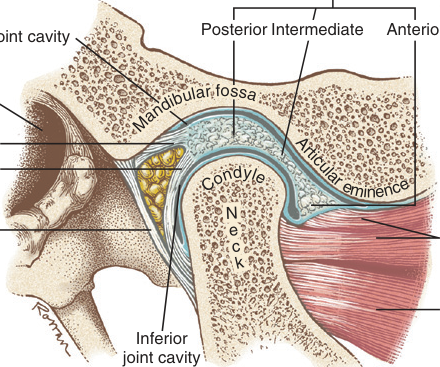
Đĩa khớp (articular disc) được chia thành ba vùng: sau (posterior), trung gian (intermediate) và trước (anterior) (xem Hình 11.10). Hình dạng của từng vùng cho phép đĩa thích nghi với các đường viền khác nhau của mỏm cầu hàm và hố hàm dưới. Vùng sau của đĩa lồi về phía trên và lõm về phía dưới. Sự lõm này ôm nhận phần lớn mỏm cầu hàm, gần giống như một khớp cầu–chỏm (ball-and-socket joint). Vùng sau cùng của đĩa bám vào các dải sau đĩa (retrodiscal laminae) được tổ chức lỏng, chứa các sợi collagen và elastin. Các nối kết do các dải này tạo ra giúp neo chặt đĩa về phía sau vào xương. Một mạng lưới gồm mô mỡ, mạch máu và các dây thần kinh cảm giác lấp đầy khoảng không gian giữa dải trên và dải dưới.
Vùng sau của đĩa khớp bám vào các cấu trúc sau (The posterior region of the articular disc attaches to the following):
Vùng trung gian của đĩa lõm về phía dưới và nhìn chung phẳng về phía trên. Vùng trước gần như phẳng về phía dưới và hơi lõm về phía trên để ôm lấy độ lồi của gồ khớp (articular eminence). Vùng trước của đĩa khớp bám vào một số mô.
Vùng trước của đĩa khớp bám vào các cấu trúc sau (The anterior region of the articular disc attaches to the following):
Bề dày của đĩa thay đổi giữa vùng trước và vùng sau của nó. Vùng trung gian mỏng nhất chỉ dày 1 mm. Tuy nhiên, các vùng trước và vùng sau dày hơn khoảng hai đến ba lần. Đĩa bị thắt lại ở vùng trung gian của nó. Sự thắt này, có hai bên kèm là các vùng trước và sau dày hơn liền kề, tạo thành một chỗ lõm nhỏ (dimple) trên mặt dưới của đĩa. Khi hàm ở vị trí khớp cắn tối đa, vùng trung gian có chỗ lõm của đĩa phải khít vào giữa bờ trước–trên của mỏm cầu hàm và gồ khớp của hố hàm dưới. Đĩa được đặt đúng vị trí như vậy tạo sự bảo vệ tối đa cho mỏm cầu hàm khi nó trượt về trước qua gồ khớp trong giai đoạn muộn của việc mở miệng rộng.
Đĩa khớp tối đa hóa tính khớp khít (congruency) trong khớp thái dương–hàm nhằm giảm áp lực tiếp xúc. Đĩa cũng làm tăng thêm sự ổn định cho khớp và giúp dẫn hướng mỏm cầu hàm của xương hàm dưới trong khi vận động. Ở một khớp thái dương–hàm khỏe mạnh, đĩa trượt cùng với mỏm cầu hàm đang dịch chuyển. Chuyển động được điều khiển bởi áp lực trong khớp (intra-articular pressure), bởi các lực cơ và bởi các dây chằng bên (collateral ligaments) nối phần rìa của đĩa khớp với mỏm cầu hàm.
Bao khớp xơ (Fibrous Capsule)
Khớp thái dương–hàm và đĩa khớp được bao quanh bởi một bao khớp xơ (fibrous capsule) lỏng. Các mặt trong của bao được lót bằng một màng hoạt dịch (synovial membrane). Về phía trên, bao khớp bám vào vành của hố hàm dưới, kéo dài về phía trước tới gồ khớp. Về phía dưới, bao khớp bám vào phần rìa của đĩa khớp và vào cổ trên của xương hàm dưới. Về phía trước, bao khớp và một phần bờ trước của đĩa bám vào gân của đầu trên của cơ pterygoid ngoài (xem Hình 11.10).
Bao khớp của khớp thái dương–hàm tạo ra sự nâng đỡ đáng kể cho khớp. Ở mặt trong và mặt ngoài, bao khớp tương đối chắc, tạo sự ổn định cho khớp trong các chuyển động sang bên như những chuyển động sinh ra khi nhai. Tuy nhiên, về phía trước và phía sau, bao khớp tương đối lỏng, cho phép mỏm cầu hàm và đĩa khớp dịch chuyển về phía trước khi miệng mở.
Dây chằng ngoài (Lateral Ligament)
Dây chằng chính củng cố khớp thái dương–hàm là dây chằng ngoài (thái dương–hàm) (lateral (temporomandibular) ligament) (Hình 11.11A). Dây chằng ngoài được mô tả là một tổ hợp gồm các sợi ngang và các sợi chéo (xem Hình 11.11B). Các sợi chéo nông hơn chạy theo hướng trước–trên, từ cổ sau của xương hàm dưới tới các bờ ngoài của gồ khớp và cung gò má (zygomatic arch). Các sợi ngang nằm sâu hơn có các chỗ bám tương tự nhau trên xương thái dương. Chúng chạy theo phương ngang và về phía sau để bám vào cực ngoài của mỏm cầu hàm.
Chức năng chính của dây chằng ngoài là ổn định mặt ngoài của bao khớp. Sự rách hay kéo dài quá mức của dây chằng ngoài có thể làm cho đĩa khớp di chuyển về phía trong do lực kéo không bị đối trọng của đầu trên của cơ pterygoid ngoài. Như sẽ được mô tả trong phần thảo luận về động học khớp, các sợi chéo của dây chằng ngoài giúp dẫn hướng chuyển động của mỏm cầu hàm trong khi mở miệng.
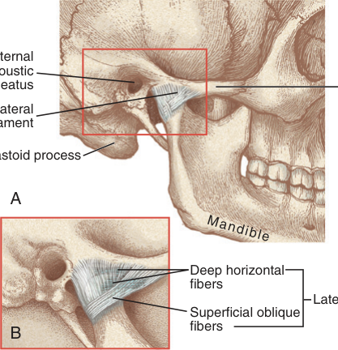
Các dây chằng bổ sung (Accessory Ligaments)
Dây chằng trâm hàm (stylomandibular) và dây chằng bướm hàm (sphenomandibular) là các dây chằng bổ sung của khớp thái dương–hàm. Cả hai đều nằm ở mặt trong so với bao khớp (Hình 11.12). Các dây chằng này giúp treo xương hàm dưới lơ lửng từ hộp sọ và nhiều khả năng chỉ giữ một vai trò động học hạn chế trong hoạt động nhai.
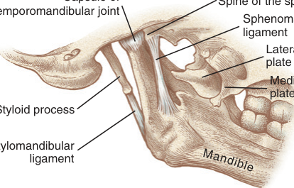
Các mô liên kết nâng đỡ trong khớp thái dương–hàm (Supporting Connective Tissues within the Temporomandibular Joint)
Động học xương chính của xương hàm dưới thường được mô tả gồm đưa hàm dưới về trước và về sau (protrusion and retrusion), di trú lệch bên (lateral excursion) và hạ và nâng hàm dưới (depression and elevation) (Hình 11.13 đến 11.15). Các mức độ kết hợp khác nhau giữa sự dịch chuyển và xoay của xương hàm dưới xảy ra trong tất cả các vận động chính. Những động học kết hợp này giúp tối ưu hóa quá trình cơ học của hoạt động nhai. Một mô tả đầy đủ về các động học này có thể tìm thấy trong một giáo trình của Okeson.
Đưa hàm dưới về trước và về sau (Protrusion and Retrusion)
Sự đưa hàm dưới về trước (protrusion) xảy ra khi xương hàm dưới dịch chuyển về phía trước mà không có xoay đáng kể (xem Hình 11.13A). Sự đưa hàm dưới về sau (retrusion) xảy ra theo hướng ngược lại (xem Hình 11.13B). Như sẽ được mô tả ở phần sau, đưa về trước và đưa về sau là những thành phần cơ bản, theo thứ tự, của việc mở và đóng miệng hết cỡ.
Di trú lệch bên (Lateral Excursion)
Di trú lệch bên của xương hàm dưới xảy ra chủ yếu dưới dạng một sự dịch chuyển từ bên này sang bên kia (xem Hình 11.14A). Hướng (phải hay trái) của di trú lệch bên chủ động có thể được mô tả là bên đối (contralateral) hay cùng bên (ipsilateral) với bên của tác động cơ chính. Ở người trưởng thành, một mức di trú lệch bên đơn bên cực đại trung bình là 11 mm (gần ½ inch) được coi là bình thường. Di trú lệch bên của xương hàm dưới thường được kết hợp với các chuyển động xoay tương đối nhẹ. Thông thường, đường đi cụ thể của chuyển động được dẫn hướng qua sự tương tác qua lại của một số yếu tố, gồm sự tiếp xúc giữa các răng trên và răng dưới (khớp cắn — occlusion), tác động của các cơ, hình dạng của hố hàm dưới và mỏm cầu hàm, và vị trí của đĩa khớp. Với mục đích đánh giá khớp cắn răng, các nha sĩ thường gọi bên của chuyển động di trú lệch bên là bên “làm việc” (“working” side) của xương hàm dưới.
Hạ hàm và nâng hàm (Depression and Elevation)
Việc hạ xương hàm dưới (depression) làm cho miệng mở ra — một thành phần cơ bản của hoạt động nhai (xem Hình 11.15A). Mức mở miệng cực đại thường xảy ra trong các tác động như ngáp và hát. Ở người trưởng thành, miệng có thể mở trung bình 45–50 mm, đo giữa các bờ cắn của các răng cửa trên và răng cửa dưới. Mức mở giữa các răng cửa (interincisal opening) thường đủ lớn để vừa ba “khớp ngón tay” (knuckle — các khớp liên đốt gần) người lớn.
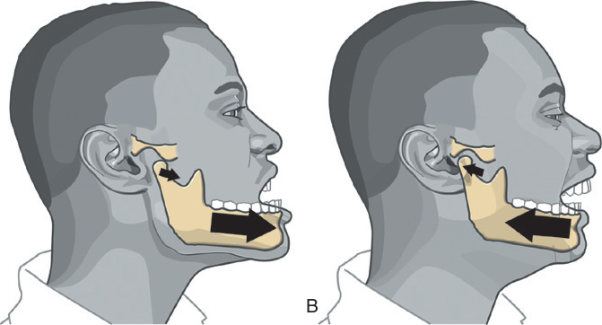
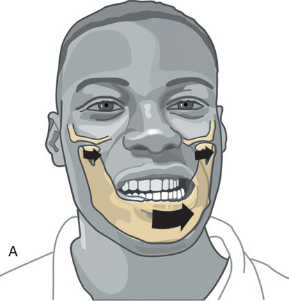
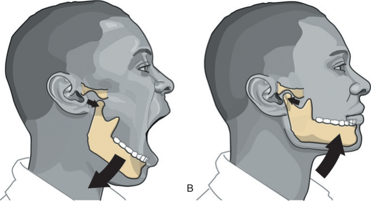
Tuy nhiên, nhai thông thường đòi hỏi một mức mở miệng cực đại trung bình là 18 mm — khoảng 38% mức mở cực đại (đủ để vừa một “khớp ngón tay” (knuckle — khớp liên đốt gần) người lớn). Việc không thể vừa hai khớp ngón tay giữa các bờ cắn của răng cửa trên và răng cửa dưới thường được coi là bất thường ở người trưởng thành có vóc dáng trung bình.
Việc nâng hàm dưới đóng miệng lại — một tác động được dùng để ép thức ăn trong quá trình nhai (xem Hình 11.15B). Trong quá trình này, các răng trên hàm dưới đang nâng lên khép chặt vào các răng trên xương hàm trên (maxilla) được giữ cố định.
Chuyển động của hàm dưới điển hình diễn ra nhờ tác động hai bên của hai khớp thái dương–hàm (temporomandibular joint — TMJ). Rối loạn chức năng ở một khớp đương nhiên sẽ cản trở chức năng của khớp kia. Tương tự như động học xương, động học khớp của khớp thái dương–hàm bình thường gồm một tổ hợp giữa chuyển động xoay và dịch chuyển. Nhìn chung, trong chuyển động xoay, mỏm cầu hàm xoay so với mặt dưới của đĩa khớp, còn trong chuyển động dịch chuyển, mỏm cầu hàm và đĩa khớp trượt về cơ bản cùng nhau. Đĩa khớp thường di chuyển theo hướng của mỏm cầu hàm đang dịch chuyển.
Sự đưa hàm dưới về trước và về sau (Protrusion and Retrusion)
Trong lúc đưa về trước và đưa về sau, mỏm cầu hàm và đĩa khớp lần lượt dịch chuyển về trước và về sau so với hố hàm dưới (xem Hình 11.13). Mức dịch chuyển mỏm cầu tối đa khoảng 1,25 cm (khoảng ½ inch) đã được đo ở mỗi hướng ở những người trưởng thành khỏe mạnh. Mỏm cầu và đĩa khớp đi theo mặt dốc xuống của gồ khớp (articular eminence). Hàm dưới trượt nhẹ xuống dưới khi đưa về trước và trượt nhẹ lên trên khi đưa về sau. Đường đi và phạm vi của chuyển động thường thay đổi tùy theo mức độ mở và đóng miệng (được mô tả ở phần sau).
Di trú lệch bên (Lateral Excursion)
Di trú lệch bên chủ yếu gồm sự dịch chuyển sang hai bên của mỏm cầu hàm và đĩa khớp trong hố hàm dưới. Các chuyển động xoay đa mặt phẳng nhẹ thường được kết hợp với di trú lệch bên. Ví dụ, Hình 11.14B thể hiện di trú lệch bên kết hợp với một chuyển động xoay nhẹ trong mặt phẳng ngang. Mỏm cầu hàm ở phía diễn ra di trú lệch bên đóng vai trò là một điểm trụ tương đối cố định, cho phép mỏm cầu bên đối thực hiện một cung xoay rộng hơn chút ít.
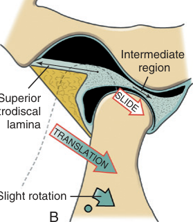
Hạ hàm và nâng hàm (Depression and Elevation)
Việc mở và đóng miệng xảy ra nhờ lần lượt hạ và nâng hàm dưới. Trong các chuyển động này, mỗi khớp thái dương–hàm trải qua một tổ hợp giữa chuyển động xoay và dịch chuyển giữa mỏm cầu hàm, đĩa khớp và hố hàm dưới. Không có khớp nào khác trong cơ thể trải qua một tỉ lệ dịch chuyển và xoay lớn đến như vậy. Các động học khớp phức tạp này là một thành phần cơ học cần thiết của việc nhai (nghiền và ép thức ăn) cũng như của việc nói. Vì chuyển động xoay và dịch chuyển xảy ra đồng thời, trục xoay liên tục di chuyển. Trong trường hợp lý tưởng, các chuyển động trong cả hai khớp thái dương–hàm tạo ra một biên độ mở miệng tối đa với mức ứng suất tối thiểu đặt lên các mặt khớp.
Rất có thể không thể xác định một tỷ lệ duy nhất giữa xoay và dịch chuyển mô tả động học của khớp thái dương–hàm trong khi mở và đóng miệng. Tỷ lệ này thay đổi dựa trên sự biến thiên tự nhiên giữa các cá thể trong chiến lược chuyển động và trên giải phẫu sọ–răng tổng thể, bao gồm hình dạng của các đĩa khớp và các mặt khớp. Tuy nhiên, dữ liệu từ văn liệu kết hợp với các quan sát huỳnh quang (fluoroscopic observations) có thể cung cấp một cái nhìn tổng quát về các động học khớp này, ít nhất là đối với giai đoạn sớm và giai đoạn muộn của việc mở miệng (Hình 11.16). Giai đoạn sớm, chiếm 35% đến 50% đầu của biên độ chuyển động, chủ yếu gồm sự xoay của hàm dưới so với sọ. Như được mô tả trong Hình 11.16A, mỏm cầu lăn (roll) về phía sau trong mặt dưới lõm của đĩa khớp. (Hướng của sự lăn được mô tả so với chuyển động xoay của một điểm trên nhánh hàm dưới.) Chuyển động lăn đưa thân hàm dưới xuống dưới và về phía sau. Trục xoay cho chuyển động này không cố định mà di chuyển trong vùng lân cận của cổ xương hàm dưới và mỏm cầu. Chuyển động lăn của mỏm cầu kéo giãn phần chéo của dây chằng bên, điều này có thể giúp khởi đầu giai đoạn muộn của việc mở miệng.
Giai đoạn muộn của việc mở miệng gồm 50% đến 65% cuối của tổng biên độ chuyển động. Giai đoạn này được đánh dấu bằng một quá trình chuyển tiếp dần dần từ xoay chủ yếu sang dịch chuyển chủ yếu. Quá trình chuyển tiếp này có thể nhận ra dễ dàng bằng cách sờ nắn mỏm cầu của hàm dưới trong khi mở miệng hết cỡ. Lượng dịch chuyển toàn phần rất lớn, khoảng 1,5 đến 2 cm ở người trưởng thành. Trong quá trình dịch chuyển, mỏm cầu và đĩa khớp trượt cùng nhau theo hướng về trước và xuống dưới, chống lại mặt dốc của gồ khớp (xem Hình 11.16B).
Vào cuối giai đoạn mở miệng, trục xoay dịch chuyển xuống dưới. Điểm chính xác của trục rất khó xác định vì nó phụ thuộc vào tỉ lệ xoay–trượt (rotation-to-translation ratio) đặc thù của từng người. Ở giai đoạn muộn của động tác mở, trục thường nằm dưới cổ hàm dưới (mandibular neck).
Việc mở miệng hết cỡ làm kéo giãn và kéo đĩa khớp về phía trước ở mức tối đa. Mức độ trượt về trước (protrusion) bị giới hạn, một phần, bởi lực căng trong tầng sau đĩa trên (superior retrodiscal lamina) — một cấu trúc đàn hồi đã bị kéo giãn. Vùng trung gian của đĩa khớp trượt về trước trong khi vẫn duy trì nằm giữa mặt trên của mỏm cầu hàm và gồ khớp. Vị trí này của đĩa tối đa hóa sự tương hợp khớp (joint congruency) và làm giảm ứng suất trong khớp.
Động học khớp của động tác đóng miệng diễn ra theo thứ tự ngược lại với những gì đã mô tả cho động tác mở. Khi miệng được mở hết cỡ và chuẩn bị đóng, lực căng trong tầng sau đĩa trên bắt đầu kéo đĩa khớp trở lại, giúp khởi phát giai đoạn trượt sớm của động tác đóng. Giai đoạn muộn được chi phối bởi sự xoay của mỏm cầu hàm trong chỗ lõm của đĩa khớp, và kết thúc khi các răng hàm trên và răng hàm dưới tiếp xúc với nhau.
Các cơ nhai cùng phân bố thần kinh của chúng được liệt kê trong Bảng 11.2. Dựa chủ yếu vào kích thước và tiềm năng lực, các cơ nhai được chia thành hai nhóm: chính và phụ. Các cơ chính là cơ cắn (masseter), cơ thái dương (temporalis), cơ pterygoid trong (medial pterygoid) và cơ pterygoid ngoài (lateral pterygoid). Nhiều cơ trong nhóm phụ bám vào xương móng (hyoid bone), nằm phía dưới xương hàm dưới và các răng hàm dưới. Các cơ nhai chính được chi phối bởi thần kinh hàm dưới (mandibular nerve) — một phân nhánh của thần kinh sinh ngũ (trigeminal nerve, thần kinh sọ V). Thần kinh này thoát khỏi hộp sọ qua lỗ bầu dục (foramen ovale), nằm ngay phía trong và hơi về phía trước so với hố hàm dưới (xem Hình 11.5).
Phần trung tâm của đĩa khớp trong khớp thái dương–hàm không có chi phối cảm giác. Tuy nhiên, vùng ngoại vi của đĩa khớp, bao khớp, dây chằng ngoài và các mô sau đĩa (retrodiscal tissues) lại chứa các sợi đau và các thụ thể cơ học (mechanoreceptors). Ngoài ra, các thụ thể cơ học và các dây thần kinh cảm giác từ niêm mạc miệng, các dây chằng quanh răng (periodontal ligaments) và các cơ cung cấp cho hệ thần kinh một nguồn phong phú về cảm giác sâu (proprioception). Thông tin cảm giác này giúp bảo vệ các mô mềm trong miệng, như lưỡi và má, khỏi chấn thương do răng gây ra trong khi nhai hoặc nói. Hơn nữa, cảm giác còn giúp phối hợp các phản xạ thần kinh–cơ đồng bộ hóa sự tương tác chức năng giữa các cơ của khớp thái dương–hàm và trong vùng sọ–cổ. Chi phối cảm giác từ khớp thái dương–hàm được truyền đi qua hai nhánh của thần kinh hàm dưới: thần kinh tai–thái dương (auriculotemporal nerve) và thần kinh cơ cắn (masseteric nerve).
Các cơ nhai chính là cơ cắn, cơ thái dương, cơ pterygoid trong và cơ pterygoid ngoài. Tham khảo Phụ lục III, Phần C để có phần tóm tắt các chỗ bám của các cơ.
Cơ cắn là một cơ dày và khỏe, dễ sờ nắn ngay phía trên góc hàm dưới (Hình 11.17A). Nhìn chung, cơ bắt nguồn từ cung gò má và xương gò má (xem Hình 11.1 và 11.5) và bám xuống dưới vào mặt ngoài của nhánh xương hàm dưới (xem Hình 11.2).
| Các cơ (Muscles) | Chi phối thần kinh (Innervation) |
|---|---|
| Các cơ chính (Primary Muscles) | |
| Cơ cắn (Masseter) | Nhánh của thần kinh hàm dưới, một phân nhánh của thần kinh sinh ngũ (thần kinh sọ V) |
| Cơ thái dương (Temporalis) | Nhánh của thần kinh hàm dưới, một phân nhánh của thần kinh sinh ngũ (thần kinh sọ V) |
| Cơ pterygoid trong (Medial pterygoid) | Nhánh của thần kinh hàm dưới, một phân nhánh của thần kinh sinh ngũ (thần kinh sọ V) |
| Cơ pterygoid ngoài (Lateral pterygoid) | Nhánh của thần kinh hàm dưới, một phân nhánh của thần kinh sinh ngũ (thần kinh sọ V) |
| Các cơ phụ (Secondary Muscles) | |
| Nhóm cơ trên móng (Suprahyoid Group) | |
| Cơ hai bụng — bụng sau (Digastric (posterior belly)) | Thần kinh mặt (thần kinh sọ VII) |
| Cơ hai bụng — bụng trước (Digastric (anterior belly)) | Thần kinh răng dưới (inferior alveolar nerve — nhánh của thần kinh hàm dưới, một phân nhánh của thần kinh sinh ngũ, thần kinh sọ V) |
| Cơ cằm móng (Geniohyoid) | C1 thông qua thần kinh dưới lưỡi (thần kinh sọ XII) |
| Cơ hàm móng (Mylohyoid) | Thần kinh răng dưới (nhánh của thần kinh hàm dưới, một phân nhánh của thần kinh sinh ngũ, thần kinh sọ V) |
| Cơ trâm móng (Stylohyoid) | Thần kinh mặt (thần kinh sọ VII) |
| Nhóm cơ dưới móng (Infrahyoid Group) | |
| Cơ vai móng (Omohyoid) | Các nhánh bụng của C1–C3 |
| Cơ ức móng (Sternohyoid) | Các nhánh bụng của C1–C3 |
| Cơ ức giáp (Sternothyroid) | Các nhánh bụng của C1–C3 |
| Cơ giáp móng (Thyrohyoid) | Nhánh bụng của C1 (qua thần kinh sọ XII) |
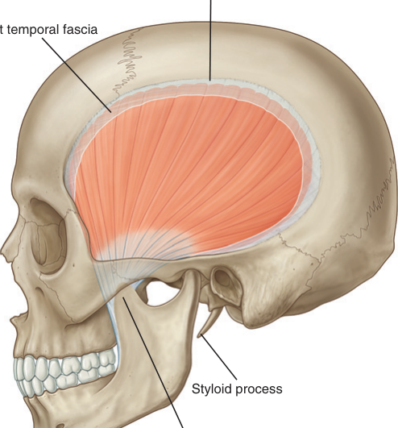
Cơ cắn có đầu nông (superficial head) và đầu sâu (deep head) (xem Hình 11.17A). Các sợi của đầu nông lớn hơn đi xuống dưới và về phía sau, bám xuống dưới gần góc hàm dưới. Các sợi của đầu sâu nhỏ hơn bám xuống dưới vào vùng trên của nhánh xương hàm dưới, gần gốc mỏm vẹt.
Các tác động của cả hai đầu của cơ cắn về bản chất là giống nhau. Sự co hai bên nâng xương hàm dưới để đưa các răng vào tiếp xúc nhau trong khi nhai. Đường lực của cơ gần như vuông góc với mặt cắn của các răng hàm. Do đó, chức năng chính của cơ cắn là tạo ra các lực lớn tiềm năng giữa các răng hàm để nghiền nát thức ăn hiệu quả. Sự tác động hai bên của các cơ cắn cũng đẩy xương hàm dưới về trước một chút. Tuy nhiên, sự co một bên của cơ cắn gây ra một sự dịch chuyển cùng bên (ipsilateral excursion) nhẹ của xương hàm dưới (Hình 11.18). Mặc dù vậy, tính hiệu quả của tác động cùng bên này được tăng cường khi xương hàm dưới đang ở tư thế dịch chuyển bên đối (contralateral excursion) vào lúc cơ co. Tư thế này không những kéo giãn cơ (vốn có thể làm tăng mức kích hoạt của nó) mà còn làm tăng tiềm năng lực của cơ trong mặt phẳng ngang. Khả năng kết hợp dịch chuyển cùng bên với một lực cắn mạnh khiến cơ cắn rất thích hợp cho việc nghiền thức ăn.
Cơ thái dương là một cơ dẹt hình quạt, lấp đầy phần lớn chỗ lõm của hố thái dương trên hộp sọ (xem Hình 11.17B). Mặt nông của cơ được phủ và dính một phần vào một tấm cân (fascia) tương đối dày, điều này làm hạn chế việc sờ nắn thân cơ. Từ chỗ bám phía sọ, cơ thái dương tạo thành một gân rộng thu hẹp dần về phía xa khi đi qua khoảng giữa cung gò má và mặt bên của hộp sọ (xem Hình 11.5). Cơ bám ở phía xa vào mỏm vẹt và vào bờ trước cùng mặt trong của nhánh xương hàm dưới (xem Hình 11.2). Sự co hai bên của các cơ thái dương nâng xương hàm dưới, tạo ra một lực cắn rất hiệu quả. Các sợi sau nghiêng hơn nâng và kéo xương hàm dưới về sau (retrude).
Tương tự như cơ cắn, cơ thái dương đi chếch hơi về phía trong khi tiến gần tới chỗ bám xa của nó. Do đó, sự co một bên của cơ thái dương — như khi nhai kiểu từ bên này sang bên kia — gây ra một sự dịch chuyển cùng bên nhẹ của xương hàm dưới (xem Hình 11.18). Như đã giải thích đối với cơ cắn, tính hiệu quả của cơ thái dương trong việc tạo ra dịch chuyển cùng bên được tăng cường khi cơ được kích hoạt từ một tư thế dịch chuyển bên đối — một kiểu động học tuần hoàn tự nhiên được sử dụng khi nhai.
Cơ pterygoid trong phát sinh từ hai đầu có kích thước chênh lệch rõ (Hình 11.19A). Đầu sâu lớn hơn nhiều bám vào mặt trong của mảnh cánh ngoài (lateral pterygoid plate) của xương bướm (xem Hình 11.5 và 11.6). Đầu nông nhỏ hơn bám vào một vùng ở mặt sau của xương hàm trên, ngay phía trên răng hàm thứ ba (so sánh góc nhìn của Hình 11.6 và 11.7). Cả hai đầu đi gần song song với cơ cắn và bám vào mặt trong của nhánh, gần góc hàm dưới (so sánh góc nhìn của Hình 11.2 và 11.4).
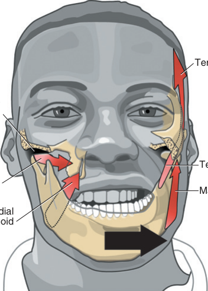
Các tác động của hai đầu của cơ pterygoid trong về bản chất là giống hệt nhau. Khi co hai bên, cơ pterygoid trong nâng xương hàm dưới và, ở mức độ hạn chế, đẩy xương hàm dưới về trước. Do đường lực của cơ hướng chếch, sự co một bên của cơ pterygoid trong tạo ra một sự dịch chuyển bên đối rất hiệu quả của xương hàm dưới (xem Hình 11.18).
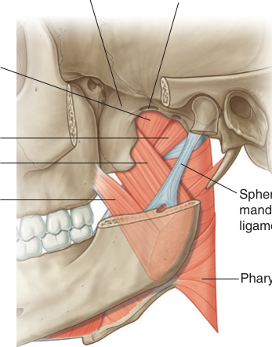
Cơ pterygoid ngoài thường được mô tả là một cơ lưỡng lông (bipennate) với hai đầu phân biệt rõ (xem Hình 11.19B). Đầu trên (superior head) phát sinh từ cánh lớn (greater wing) của xương bướm (xem Hình 11.5 và 11.7). Đầu dưới (inferior head) lớn hơn đáng kể phát sinh từ mặt ngoài của mảnh cánh ngoài và vùng kế cận của xương hàm trên (xem Hình 11.7).
Như một toàn thể, cơ pterygoid ngoài đi gần như theo chiều nằm ngang để bám vào một vùng của cổ hàm dưới, rất gần với khớp (ôn lại Hình 11.10). Mặc dù các chi tiết giải phẫu cụ thể vẫn còn đang được tranh luận, đầu trên của cơ pterygoid ngoài có chung chỗ bám với hố pterygoid (xem Hình 11.2), thành trong của bao khớp và mặt trong của đĩa khớp. Đầu dưới bám trong hố pterygoid và vùng cổ hàm dưới kế cận. Một đầu thứ ba của cơ cũng đã được đề xuất, dựa trên các kiểu bố trí đa dạng của các chỗ bám xa.
Tác động chính xác và vai trò của hai đầu của cơ pterygoid ngoài trong khi nhai vẫn còn gây tranh cãi và chưa được hiểu hoàn toàn. Sự thiếu hiểu biết này một phần phản ánh vị trí sâu của cơ và thách thức kỹ thuật tương ứng đối với các nghiên cứu điện cơ (electromyographic). Tuy nhiên, người ta nhìn chung thống nhất rằng sự co một bên của cả hai đầu của cơ pterygoid ngoài sinh ra di trú lệch bên về phía bên đối (contralateral excursion) của hàm dưới (xem Hình 11.18). Hơn nữa, sự co một bên của cơ làm xoay mỏm cầu hàm cùng bên về phía trước–trong trong mặt phẳng ngang — một thành phần động học điển hình của di trú lệch bên bên đối (được ôn lại trong Hình 11.14B). Thông thường, một cơ pterygoid ngoài phải hay trái cho trước sẽ co cộng hưởng với các cơ khác trong khi nhai. Ví dụ, như được mô tả trong Hình 11.18, một động tác cắn có kèm di trú lệch bên sang trái được kiểm soát bởi các cơ pterygoid ngoài và pterygoid trong bên phải và, ở mức độ ít hơn, bởi cơ cắn và cơ thái dương bên trái.
Sự co hai bên của cả hai đầu của cơ pterygoid ngoài sinh ra một sự đưa hàm dưới về trước (protrusion) mạnh. Như sẽ được mô tả đầy đủ ở phần sau trong thảo luận về điều khiển cơ của việc mở và đóng miệng, hai đầu của cơ pterygoid ngoài hoạt động ở các pha khác nhau của việc mở và đóng miệng. (Dựa trên cân nhắc này và các cân nhắc hình thái học khác, một số tác giả đã lập luận rằng hai đầu của cơ pterygoid ngoài thực ra là hai cơ riêng biệt.) Phần lớn các nguồn tài liệu cho rằng đầu dưới là cơ hạ hàm dưới chính, đặc biệt trong khi mở miệng kháng lực. Ngược lại, đầu trên giúp kiểm soát mức căng bên trong đĩa khớp và vị trí của nó trong khi đóng hàm kháng lực. Tác động này đặc biệt quan trọng trong khi đóng hàm kháng lực một bên, chẳng hạn như khi cắn xuống một viên kẹo cứng.
TẬP TRUNG ĐẶC BIỆT 11.1 — Các tương tác chức năng giữa cơ cắn và cơ pterygoid trong (Functional Interactions between the Masseter and Medial Pterygoid Muscles)
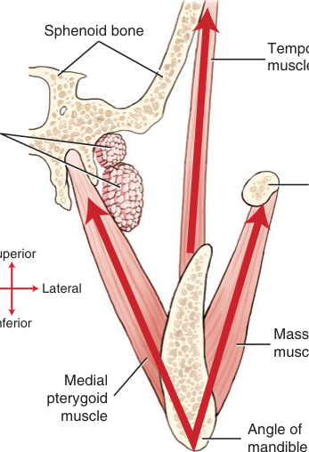
Cơ pterygoid trong và cơ cắn tạo thành một vòng đeo chức năng quanh góc xương hàm dưới (Hình 11.20). Các sự co đồng thời của các cơ này có thể tạo ra một lực cắn mạnh, được dẫn truyền xuyên qua hàm và cuối cùng vào giữa các răng hàm trên và răng hàm dưới. Lực cắn cực đại trong vùng này trung bình khoảng 422 N (95 lb) ở người trưởng thành, gấp đôi mức được sinh ra giữa các răng cửa.
Tác động lên mặt trong và mặt ngoài của hàm dưới, cơ cắn và cơ pterygoid trong còn sinh ra một lực từ bên này sang bên kia quan trọng giữa các răng hàm trên và răng hàm dưới. Như được thể hiện trong Hình 11.18, sự co đồng thời của cơ pterygoid trong phải và cơ cắn trái sinh ra sự lệch hàm sang trái. Sự co của các cơ này theo kiểu cộng hưởng như vậy có thể tạo ra một lực cắt (shear force) rất hiệu quả giữa các răng hàm và thức ăn, ở cả hai bên miệng. Tác động cơ kết hợp này rất hiệu quả trong việc nghiền và ép thức ăn trước khi nuốt.
TẬP TRUNG ĐẶC BIỆT 11.2 — Rối loạn bên trong của đĩa khớp (Internal Derangement of the Disc)
Rối loạn cơ học của khớp thái dương–hàm thường gây ra các âm thanh bật kêu của khớp, cùng với các vận động của hàm đau đớn, gắng nhọc và bị giảm. Ngoài ra, rối loạn cơ học có thể bao gồm một vị trí bất thường của đĩa khớp so với mỏm cầu hàm và hố hàm dưới, một khiếm khuyết được gọi là rối loạn bên trong của đĩa khớp (internal derangement of the disc). Sự rối loạn này có thể do bệnh lý, chấn thương hoặc các tình trạng khác trong khớp gây ra, bao gồm hình dạng đĩa bị thay đổi, độ dốc bất thường của gồ khớp (articular eminence), bao khớp bị kéo giãn quá mức, hoặc sự mất độ đàn hồi bên trong dải sau đĩa trên (superior retrodiscal lamina). Ngoài ra, rối loạn bên trong của đĩa khớp có thể liên quan với sự quá hoạt động (hyperactivity) của cơ, nổi bật nhất là đầu trên của cơ pterygoid ngoài. Dựa trên đường kéo và các chỗ bám của các sợi cơ này, sự kích hoạt quá mức có thể kéo và sau đó dịch chuyển đĩa khớp theo hướng về trước và về trong so với khớp. Nguyên nhân của sự quá hoạt động ở cơ này chưa được biết chắc chắn, nhưng nó có thể liên quan với stress cảm xúc mạn tính và các thói quen ngoại chức năng (parafunctional habits), chẳng hạn như nghiến răng quá mức hoặc nghiết răng. Một khi đĩa khớp đã bị định vị bất thường, nó dễ bị tổn thương bởi các ứng suất tiềm tàng lớn và có khả năng gây hại.
Các cơ trên móng (suprahyoid muscles) và các cơ dưới móng (infrahyoid muscles) được coi là các cơ nhai thứ cấp (Hình 11.21). Các cơ này được liệt kê trong Bảng 11.2. Các lực được các cơ này sinh ra được truyền đến hàm dưới một cách trực tiếp hoặc gián tiếp. Các cơ trên móng bám giữa đáy hộp sọ, xương móng và hàm dưới; các cơ dưới móng bám phía trên vào xương móng và phía dưới vào sụn giáp (thyroid cartilage), xương ức và xương bả vai. Chỗ bám hàm dưới của ba trong số các cơ trên móng — bụng trước cơ hai bụng, cơ cằm móng (geniohyoid) và cơ hàm móng (mylohyoid) — được thể hiện trong Hình 11.4. Phụ lục III, Phần C gồm các chỗ bám của các cơ trên móng và cơ dưới móng. Khi xương móng được ổn định nhờ sự kích hoạt đủ mức của các cơ dưới móng, các cơ trên móng có thể hỗ trợ hạ hàm dưới và nhờ đó mở miệng. Các cơ trên móng và cơ dưới móng cũng tham gia vào việc nói, vận động lưỡi và nuốt, cũng như trong việc kiểm soát các khối thức ăn (bolus) trước khi nuốt.
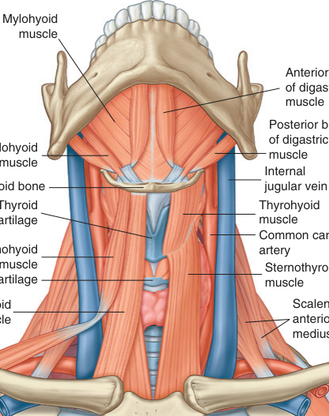
Bảng 11.3 cung cấp một bản tóm tắt các tác động riêng của từng cơ nhai.
| Cơ (Muscle) | Nâng (Đóng miệng) (Elevation (Closing of the Mouth)) | Hạ (Mở miệng) (Depression (Opening of the Mouth)) | Di trú lệch bên (Lateral Excursion) | Đưa về trước (Protrusion) | Đưa về sau (Retrusion) |
|---|---|---|---|---|---|
| Cơ cắn (Masseter) | XXX | — | X (IL) | X | — |
| Cơ pterygoid trong (Medial pterygoid) | XXX | — | XXX (CL) | X | — |
| Cơ pterygoid ngoài (đầu trên) (Lateral pterygoid (superior head)) | * | — | XXX (CL) | XXX | — |
| Cơ pterygoid ngoài (đầu dưới) (Lateral pterygoid (inferior head)) | — | XXX | XXX (CL) | XXX | — |
| Cơ thái dương (Temporalis) | XXX | — | X (IL) | — | XXX (các sợi sau) |
| Nhóm cơ trên móng (Suprahyoid muscle group) | — | XXX | — | — | X† |
CL, di trú lệch bên bên đối (contralateral excursion); IL, di trú lệch bên cùng bên (ipsilateral excursion). Tiềm năng tương đối của một cơ trong việc vận động hàm dưới được chấm một trong ba mức điểm: X = tối thiểu, XX = trung bình và XXX = tối đa. Dấu — chỉ không có tác động cơ hiệu quả.
*Ổn định hoặc điều chỉnh vị trí của đĩa khớp. (Chú thích gắn dấu * trong bảng.)
†Chỉ nhờ tác động trực tiếp của cơ cằm móng, cơ hàm móng và cơ hai bụng (bụng trước). (Chú thích gắn dấu † trong bảng.)
Mở miệng (Opening the Mouth)
Việc mở miệng được thực hiện chủ yếu qua sự co của đầu dưới của cơ pterygoid ngoài và nhóm các cơ trên móng. Tác động này được mô tả trong Hình 11.22A khi miệng mở ra để chuẩn bị cắn vào một quả nho. Đầu dưới của cơ pterygoid ngoài chịu trách nhiệm chủ yếu cho sự dịch chuyển về trước (protrusion) của mỏm cầu hàm. Cơ này cũng tham gia trong một cặp lực (force-couple) với các cơ trên móng đang co. Cặp lực này làm xoay hàm dưới quanh trục xoay của nó, được thể hiện như một vòng tròn màu xanh lục dưới cổ xương hàm dưới. Mặc dù sự xoay của hàm dưới bị giảm trong pha muộn của việc mở miệng, nó vẫn giúp tạo điều kiện cho các mức cực hạn của tác động này. Mặc dù trọng lực hỗ trợ việc mở miệng, cần một mức kích hoạt cơ đáng kể để mở miệng hoàn toàn. Điều thú vị, và có lẽ không ngoài dự đoán, các mô hình hóa toán học chỉ ra rằng khớp thái dương–hàm chịu một mức tải trọng vật lý tổng thể lớn hơn trong khi mở miệng hoàn toàn so với khi đóng miệng không kháng lực. Trong khi mở hoàn toàn, mỏm cầu hàm đang dịch chuyển tạo sự tiếp xúc chắc chắn hơn với gồ khớp so với khi đóng miệng không bị cản trở. Tuy nhiên, như dự đoán, việc đóng miệng kháng lực (như trong khi nhai) sinh ra một mức tải khớp và nén đĩa khớp lớn hơn nhiều so với mở miệng hoàn toàn, chủ yếu do nhu cầu về các lực cắn cơ lớn.
Như đã mô tả trước đó, đĩa khớp và mỏm cầu hàm trượt về trước như một đơn vị trong pha muộn của việc mở miệng. Đĩa khớp bị kéo giãn và bị kéo về phía trước bởi (1) mỏm cầu hàm đang dịch chuyển và (2) áp lực trong khớp (intra-articular pressure) tăng lên do sự kích hoạt của đầu dưới của cơ pterygoid ngoài tạo ra. Mặc dù đầu trên của cơ pterygoid ngoài bám trực tiếp vào đĩa khớp, phần lớn văn liệu chỉ ra rằng nó tương đối không hoạt động trong khi miệng đang mở.
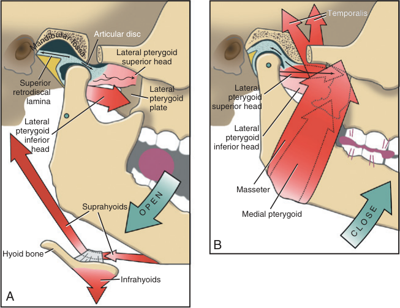
Đóng miệng (Closing the Mouth)
Việc đóng miệng chống lại lực cản được thực hiện chủ yếu qua sự co của các cơ cắn, cơ pterygoid trong và cơ thái dương (xem Hình 11.22B). Tất cả các cơ này đều có một cánh tay đòn (đòn bẩy) rất thuận lợi cho tác động này. Các sợi sau nằm chéo hơn của cơ thái dương còn thực hiện việc đưa hàm dưới về sau (retrusion). Tác động này dịch chuyển hàm dưới theo hướng về sau–trên, giúp đặt lại mỏm cầu hàm vào đúng chỗ trong hố hàm dưới ở pha cuối cùng của việc đóng miệng.
Mặc dù tác động cơ này chưa được hiểu rõ hoặc được thống nhất hoàn toàn, đầu trên của cơ pterygoid ngoài nhiều khả năng đang hoạt động lệch tâm trong khi đóng miệng. Kích hoạt lệch tâm (eccentric activation) tạo ra một lực căng về phía trước lên đĩa khớp và cổ xương hàm dưới (xem Hình 11.22B). Lực căng này giúp ổn định và định vị tối ưu đĩa khớp giữa mỏm cầu hàm và gồ khớp. Sự kích hoạt cơ này cũng giúp cân bằng với lực đưa về sau mạnh được sinh ra bởi các sợi sau của cơ thái dương.
Rối loạn thái dương–hàm (temporomandibular disorder — TMD) là một thuật ngữ rộng và thường mơ hồ, được dùng để mô tả một số vấn đề lâm sàng liên quan đến khớp thái dương–hàm. Các TMD thường đi kèm với các khiếm khuyết liên quan đến các cơ, các khớp, hoặc cả hai.
TẬP TRUNG ĐẶC BIỆT 11.3 — Vai trò đặc biệt của đầu trên của cơ pterygoid ngoài trong việc điều chỉnh vị trí đĩa khớp (The Special Role of the Superior Head of the Lateral Pterygoid in Adjusting Disc Position)
Vị trí cụ thể của đĩa khớp so với mỏm cầu hàm trong khi cắn chịu ảnh hưởng mạnh bởi kiểu lực cản được tạo ra bởi các vật đang được nhai. Trong khi miệng đang đóng chống lại một lực cản cắn tương đối thấp, chẳng hạn như cắn vào một quả nho như được mô tả trong Hình 11.22B, vùng trung gian mỏng của đĩa khớp thường nằm ở vị trí lý tưởng của nó giữa mỏm cầu hàm và gồ khớp. Tuy nhiên, khi áp dụng một lực cắn lớn, không đối xứng, vị trí của đĩa khớp có thể cần được điều chỉnh. Ví dụ, việc cắn một bên vào một viên kẹo cứng giữa các răng hàm tạm thời làm giảm áp lực trong khớp của khớp thái dương–hàm cùng bên. Cho tới khi viên kẹo bị nghiền nát, nó đóng vai trò như một “miếng chêm” (spacer) giữa hàm trên và hàm dưới, làm giảm sự tiếp xúc khớp. Trong sự kiện này, một sự co đồng tâm mạnh của đầu trên của cơ pterygoid ngoài có thể đưa đĩa khớp về phía trước, nhờ đó trượt vùng sau dày hơn của nó vào giữa mỏm cầu hàm và gồ khớp. Bề mặt dày hơn này làm tăng tính khớp khít (congruency) bên trong khớp, giúp ổn định khớp chống lại các lực không đều được áp lên toàn bộ hàm dưới.
Ngoài đau khi vận động, các dấu hiệu và triệu chứng của các rối loạn thái dương–hàm (TMD) còn gồm âm khớp (“tiếng bật kêu”), lực cắn răng hàm giảm, tầm mở miệng giảm, đau đầu, ù tai, các cơ nhai và cơ sọ–cổ quá mức hoạt động và đau (các điểm kích thích), và đau chuyển (referred pain) lên da mặt và da đầu. Nhiều yếu tố có liên quan đến nguyên nhân gây TMD, gồm stress tâm lý hoặc các rối loạn cảm xúc khác, các thói quen ngoại chức năng (parafunctional habits) hàng ngày trong miệng (ví dụ, nghiến răng, cắn môi hoặc lưỡi lặp đi lặp lại), hoạt động cơ không đối xứng, nghiến răng khi ngủ (sleep bruxism), tư thế đầu về trước mạn tính, bệnh lý cột sống cổ, hoặc sự mẫn cảm hóa của hệ thần kinh trung ương. Mặc dù phần lớn các trường hợp tự khỏi, một tỷ lệ nhỏ có thể tiến triển thành thoái hóa khớp (osteoarthritis), có thể dẫn tới những thay đổi thoái hóa đáng kể trong khớp, tái tạo lại xương và mất chức năng rõ rệt.
Không có một lời giải thích cơ học hay sinh lý duy nhất nào có thể giải thích được vô số triệu chứng liên quan đến TMD. Cơ chế bệnh lý của một rối loạn cụ thể có thể bắt nguồn từ sự tăng ứng suất khớp do giải phẫu hoặc bộ răng bất thường; rối loạn bên trong đĩa khớp; hoặc chấn thương, chẳng hạn như té ngã, bị đập vào mặt, hoặc chấn thương cổ kiểu roi vẩy (whiplash). Các yếu tố dễ mắc khác có thể gồm tình trạng quá tải khớp mạn tính và sự hiện diện của bệnh thấp khớp. Tuy nhiên, thường không xác định được nguyên nhân chính xác của TMD.
Điều trị TMD đa dạng về phương pháp và phụ thuộc chủ yếu vào bản chất của vấn đề tiềm ẩn. Nhiều triệu chứng liên quan đến TMD thường đòi hỏi các điều trị phối hợp từ một nhóm lâm sàng, có thể gồm nha sĩ, nhà vật lý trị liệu và nhà tâm lý học. Các điều trị bảo tồn phổ biến hơn đối với TMD được liệt kê trong hộp sau đây.
Hộp: Các điều trị bảo tồn phổ biến đối với các rối loạn thái dương–hàm (Common Conservative Treatments for Temporomandibular Disorders)
Việc thảo luận về hiệu quả lâm sàng tương đối của các điều trị bảo tồn khác nhau đối với TMD nằm ngoài phạm vi của chương này. Tuy nhiên, tóm lại, một số nghiên cứu lâm sàng đã báo cáo rằng bài tập trị liệu, thủ thuật trị liệu, liệu pháp nẹp cắn và giáo dục bệnh nhân có thể giảm đau và cải thiện tầm vận động của hàm ở những người bị TMD. Tuy nhiên, không phải tất cả các nghiên cứu đều đồng thuận với các kết quả này. Những kết quả trái chiều về hiệu quả điều trị TMD một phần bắt nguồn từ thiết kế của các nghiên cứu. Nhiều nghiên cứu đã không kiểm soát tối ưu các biến nhiễu, chẳng hạn như các can thiệp điều trị không giống nhau hoặc sử dụng các đối tượng có mức độ nặng hay loại bệnh lý biến thiên rộng.
Can thiệp phẫu thuật tương đối hiếm ở những người bị TMD và thường chỉ được thực hiện khi đau nhiều hoặc vận động hạn chế đến mức chất lượng cuộc sống bị giảm đáng kể. Ngoài chọc rửa khớp (arthrocentesis), phẫu thuật có thể gồm nội soi khớp (arthroscopy) để quan sát khớp và cắt bỏ các dính khớp, cắt mỏm cầu hàm (condylotomy) để sắp xếp lại mỏm cầu hàm so với đĩa khớp, mở khớp (arthrotomy) (các thủ thuật phẫu thuật như tái định vị đĩa khớp và cắt bỏ đĩa khớp), và thay khớp thái dương–hàm.
Phần 1 của chương này trình bày động học của khớp thái dương–hàm (TMJ). Cặp khớp này được tham gia vào hoạt động một cách vật lý hàng nghìn lần mỗi ngày, không chỉ trong khi nhai mà còn trong khi nuốt, nói, hát và các hoạt động vô thức phi đặc hiệu khác. Các hoạt động này chắc chắn sinh ra các lực nén và lực trượt lên các mặt khớp và các mô liên kết quanh khớp của khớp. Các lực dao động từ rất nhỏ — ví dụ, trong khi nuốt — cho tới có thể hàng trăm newton — ví dụ, trong khi nhai thức ăn mạnh mẽ. Các lực này khởi phát chủ yếu từ các tác động của cơ. Các cơ phối hợp cộng hưởng để mở và đóng miệng cũng như di chuyển xương hàm dưới theo kiểu từ bên này sang bên kia và từ trước ra sau — các tác động mà hiệu quả nghiền và xay thức ăn trước khi nuốt rất cao.
Ngoài việc sinh ra các lực lớn và đa hướng, các khớp thái dương–hàm phải cho phép xương hàm dưới vận động rộng, từ chỉ vài milimet trong khi thì thào, cho tới có thể 5 cm hạ xuống khi chuẩn bị cắn vào một quả táo lớn. Những yêu cầu chức năng độc đáo đặt lên khớp thái dương–hàm được phản ánh qua cấu trúc đặc trưng của khớp. Khớp được khớp nối lỏng để cho phép cả xoay và trượt của mỏm cầu hàm. Khớp “trượt–bản lề” kết hợp này làm tăng tiềm năng biên độ vận động của xương hàm dưới. Như một cách để bảo vệ khớp khỏi các lực lớn và lặp lại tiềm tàng, các mặt khớp xương được lót bằng một lớp sụn sợi và được che phủ một phần bởi một đĩa khớp dày nằm trong khớp. Các chức năng chính của đĩa khớp là dẫn dắt động học khớp, ổn định khớp và, có lẽ quan trọng nhất, giảm ứng suất lên các mặt khớp của khớp.
Trong khi xương hàm dưới vận động, đĩa khớp liên tục được định vị lại để tối ưu hóa việc giảm ứng suất tiếp xúc — đặc biệt giữa mỏm cầu hàm và mào khớp dốc của hố hàm dưới. Việc định vị đĩa khớp được dẫn dắt bởi một tổ hợp các lực, gồm lực căng thụ động từ bao khớp bị kéo giãn và các mảnh sau đĩa, lực nén từ mỏm cầu hàm, và các lực chủ động từ đầu trên của cơ pterygoid ngoài. Ở một số người, đĩa khớp có thể bị lệch vị trí tạm thời hoặc vĩnh viễn, không còn khả năng bảo vệ khớp khỏi ứng suất có khả năng gây tổn thương. Trong các trường hợp nặng và mạn tính hơn, rối loạn bên trong đĩa khớp có thể dẫn tới vận động xương hàm dưới đau và giảm, thường kèm theo viêm mạn tính và thoái hóa của mô liên kết quanh khớp.
Các tình trạng mạn tính đau khác cũng tồn tại tại khớp thái dương–hàm, ngay cả khi đĩa khớp được sắp xếp tốt. Những tình trạng này thường gây bối rối và khó điều trị. Các cách tiếp cận điều trị khác nhau đáng kể giữa các chuyên khoa. Bất kể cách tiếp cận, các nhà lâm sàng phải đối mặt với thách thức hiểu giải phẫu và động học phức tạp của khớp thái dương–hàm. Kiến thức này là bước đầu tiên để đánh giá cao các biểu hiện lâm sàng đa dạng của các rối loạn thái dương–hàm, cũng như hiểu cơ sở của phần lớn các can thiệp điều trị bảo tồn và phẫu thuật.
Thông khí (ventilation) là quá trình cơ học mà không khí được hít vào và thở ra qua phổi và đường thở. Quá trình nhịp nhàng này xảy ra 12 đến 20 lần mỗi phút khi nghỉ và rất cần cho việc duy trì sự sống. Chương này nay tập trung vào động học của thông khí.
Thông khí cho phép trao đổi oxy và carbon dioxide giữa các túi phế nang (alveoli) của phổi và máu. Sự trao đổi này rất cần cho chuyển hóa oxy hóa bên trong các sợi cơ. Quá trình này chuyển hóa năng lượng hóa học dự trữ trong ATP thành năng lượng cơ học cần để di chuyển và ổn định các khớp của cơ thể.
Mức độ tương đối của thông khí có thể được mô tả là “nhẹ” (quiet) hay “gắng sức” (forced). Ở dân số khỏe mạnh, thông khí nhẹ xảy ra trong các hoạt động ít vận động tương đối, với yêu cầu chuyển hóa thấp. Ngược lại, thông khí gắng sức xảy ra trong các hoạt động gắng sức đòi hỏi sự trao đổi không khí nhanh và nhiều, chẳng hạn như khi tập luyện, hoặc khi có một số bệnh hô hấp. Một phổ rộng và liên tục về mức độ thông khí tồn tại giữa thông khí nhẹ và thông khí gắng sức.
Hình 11.23 cho thấy các thể tích và dung tích phổi ở người trưởng thành bình thường. Như được thể hiện, tổng dung tích phổi (total lung capacity) khoảng 5,5 đến 6 L không khí. Dung tích sống (vital capacity), bình thường khoảng 4500 mL, là thể tích không khí lớn nhất có thể thở ra sau một lần hít vào cực đại. Thể tích khí (tidal volume) là thể tích không khí di chuyển vào và ra khỏi phổi trong mỗi chu kỳ thông khí. Khi nghỉ, thể tích khí khoảng 0,5 L, xấp xỉ 10% dung tích sống.
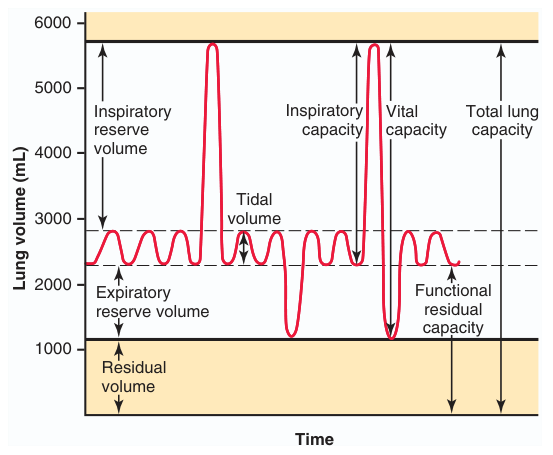
Thông khí được dẫn động bởi một tổ hợp các lực chủ động và thụ động làm thay đổi thể tích bên trong lồng ngực có khả năng nở rộng. Sự thay đổi thể tích trong lồng ngực gây ra sự thay đổi áp suất không khí như được mô tả bằng định luật Boyle. Định luật này phát biểu rằng, với nhiệt độ và khối lượng xác định, thể tích và áp suất của một chất khí, chẳng hạn như không khí, tỷ lệ nghịch với nhau. Ví dụ, tăng thể tích bên trong buồng của một piston sẽ làm giảm áp suất của không khí được chứa trong đó. Vì không khí tự di chuyển từ áp suất cao sang áp suất thấp, áp suất không khí tương đối cao bên ngoài piston sẽ đẩy không khí vào một lỗ mở ở đỉnh piston. Nói cách khác, áp suất âm được tạo ra bên trong piston hút không khí vào buồng của nó (Hình 11.24A). Phép so sánh giữa lồng ngực và piston này có thể rất hữu ích để hiểu cơ học của thông khí. Như sẽ được mô tả, phần lớn vật lý học của thông khí ở người dựa trên mối quan hệ nghịch đảo giữa thể tích và áp suất của một chất khí.
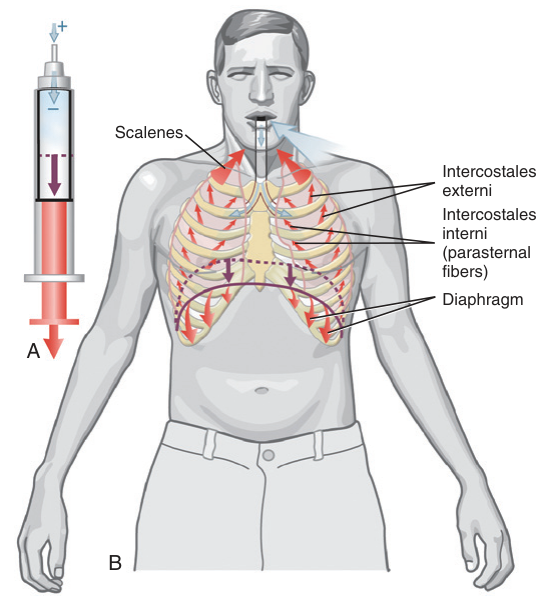
Trong khi hít vào, thể tích trong lồng ngực được tăng lên bằng sự co của các cơ bám vào xương sườn và xương ức (xem Hình 11.24B). Khi lồng ngực nở ra, áp suất bên trong khoảng trong màng phổi, vốn đã âm, được giảm thêm, tạo ra một lực hút làm nở phổi. Sự nở phổi kéo theo làm giảm áp suất phế nang xuống dưới áp suất khí quyển, cuối cùng kéo không khí từ khí quyển vào phổi.
Thở ra là quá trình thổi (thở ra) không khí từ phổi ra môi trường. Phù hợp với phép so sánh với piston đã mô tả trước đó, giảm thể tích bên trong buồng của piston làm tăng áp suất lên không khí được chứa trong đó, đẩy nó ra ngoài. Thở ra ở người cũng xảy ra bằng một quá trình tương tự. Giảm thể tích trong lồng ngực làm tăng áp suất phế nang, từ đó đẩy không khí từ các túi phế nang, ra khỏi phổi và ra khí quyển.
Ở những người khỏe mạnh, thở ra nhẹ về bản chất là một quá trình thụ động không phụ thuộc vào kích hoạt cơ. Khi các cơ hít vào giãn ra sau khi co, thể tích trong lồng ngực tự nhiên giảm xuống do sự đàn hồi trở lại (elastic recoil) của phổi, lồng ngực và các mô liên kết của các cơ hít vào bị kéo giãn. Thở ra gắng sức, chẳng hạn như cần thiết trong khi thở sâu hay nhanh, ho, hoặc thổi tắt một ngọn nến, đòi hỏi lực chủ động do các cơ thở ra sinh ra, chẳng hạn như các cơ bụng.
Lồng ngực (thorax), hay lồng sườn, là một hệ thống kín hoạt động như một chiếc kèn bấm (bellows) cơ học cho thông khí. Mặt trong của lồng ngực được niêm phong khỏi bên ngoài bằng các màng cân và một số mô cơ–xương. Mặc dù chương này tập trung vào lồng ngực như một chiếc kèn bấm cơ học, lồng ngực còn bảo vệ các cơ quan tim–phổi và các mạch máu lớn; đóng vai trò là nền tảng cấu trúc cho cột sống cổ; và cung cấp nơi bám cho các cơ tác động trực tiếp hoặc gián tiếp lên đầu, cổ và các chi.
Lồng ngực thay đổi hình dạng trong thông khí qua các mức vận động khác nhau của khớp mỏm ức và năm bộ khớp nối bổ sung.
Các khớp nối trong lồng ngực (Articulations within the Thorax)
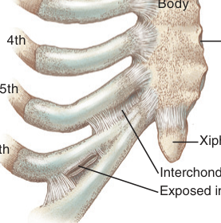
Mỏm ức hợp nhất với thân xương ức tại khớp mỏm ức (manubriosternal joint) (Hình 11.25). Khớp nối sụn sợi này được xếp loại là một khớp bất động (synarthrosis), tương tự về cấu trúc với khớp vệ (pubic symphysis). Một đĩa khớp một phần lấp đầy ổ của khớp mỏm ức, và hoàn toàn hóa xương vào cuối đời. Trước khi hóa xương, khớp có thể đóng góp khiêm tốn vào sự nở rộng của lồng ngực. Sau khi hóa xương, vị trí hợp nhất mỏm ức thường có thể sờ nắm và thường được dùng làm mốc giải phẫu hỗ trợ nghe tim phổi và xác định vị trí đặt điện cực điện tâm đồ (ECG).
Theo cả hai bên, các đầu sụn trước của bảy xương sườn đầu khớp nối với các mặt bên của xương ức. Theo nghĩa rộng, các khớp nối này được gọi là các khớp sườn–ức (sternocostal joints) (xem Hình 11.25). Tuy nhiên, do có sụn chen giữa giữa xương của xương sườn và xương ức, mỗi khớp sườn–ức về mặt cấu trúc được chia thành các phối hợp sườn–sụn (costochondral) và sụn–ức (chondrosternal).
Các phối hợp sườn–sụn đại diện cho vùng chuyển tiếp giữa xương và sụn của các đầu trước của mỗi xương sườn. Không có bao khớp hay dây chằng nào củng cố các phối hợp này. Màng xương của các xương sườn dần biến thành màng sụn của sụn. Các phối hợp sườn–sụn cho phép rất ít vận động.
Các phối hợp sụn–ức được tạo thành giữa các đầu trong của sụn sườn với các mặt sườn hơi lõm trên xương ức. Phối hợp sụn–ức thứ nhất là một khớp bất động (synarthrosis), tạo ra một mối nối tương đối cứng với xương ức. Tuy nhiên, các khớp từ thứ hai đến thứ bảy về bản chất là khớp hoạt dịch, cho phép các vận động trượt nhẹ. Các đĩa sụn sợi thỉnh thoảng hiện diện, đặc biệt ở các khớp dưới, nơi các ổ khớp thường vắng mặt. Mỗi khớp hoạt dịch được bao quanh bởi một bao khớp được củng cố bởi các dây chằng tỏa (radiate ligaments).
Các bờ đối diện của sụn của các xương sườn 5 đến 10 tạo thành các khớp liên sụn sườn nhỏ, có lót hoạt dịch, được củng cố bởi các dây chằng liên sụn (xem Hình 11.25). Các xương sườn 11 và 12 không bám về phía trước vào xương ức.
Đầu sau của các xương sườn bám vào cột sống qua một cặp khớp sườn–đốt sống: khớp sườn–thân đốt sống (costocorporeal) và khớp sườn–mỏm ngang (costotransverse). Các khớp sườn–thân đốt sống nối đầu của mỗi trong 12 xương sườn với các mặt tương ứng của các thân đốt sống ngực.
Các khớp sườn–mỏm ngang nối củ khớp (articular tubercles) của các xương sườn 1 đến 10 với các mỏm ngang của các đốt sống ngực tương ứng. Các xương sườn 11 và 12 thường thiếu khớp sườn–mỏm ngang. Giải phẫu và các cấu trúc dây chằng của các khớp này đã được mô tả và minh họa trong Chương 9 (xem Hình 9.51).
Vận động trong cột sống ngực xảy ra chủ yếu tại các khớp liên thân đốt (interbody joints) và các khớp mỏm khớp trong vùng này. Cấu trúc và chức năng của các khớp này đã được mô tả trong Chương 9.
Trong khi hít vào, đường kính đứng của lồng ngực được tăng lên chủ yếu nhờ sự co và sự hạ xuống tiếp theo của vòm cơ hoành (xem Hình 11.24B). Trong khi thở ra nhẹ, cơ hoành giãn ra, cho phép vòm hồi phục trở lên về vị trí nghỉ của nó.
Sự nâng lên và hạ xuống của các xương sườn và xương ức tạo ra các thay đổi về đường kính trước–sau và trong–ngoài của lồng ngực. Mặc dù tất cả các khớp nối trong lồng ngực đều góp phần vào các thay đổi đường kính này, các khớp sườn–đốt sống giữ vai trò chính trong các động học này. Các vận động góc xảy ra ở cả ba bậc tự do tại các khớp sườn–đốt sống, nhưng, vượt trội hẳn, mức tự do xoay lớn nhất xảy ra trong một mặt phẳng tương ứng với sự nâng lên và hạ xuống của thân xương sườn (được mô tả dưới đây). Trung bình, khoảng 15 độ xoay xảy ra quanh một cặp khớp sườn–đốt sống cho trước khi xương sườn tương ứng được nâng lên và hạ xuống hoàn toàn.
Trong khi hít vào, thân xương sườn nâng lên theo một đường vuông góc với trục xoay, vốn nằm nhìn chung song song với các mỏm ngang tương ứng. Như được mô tả trong Hình 11.26, trục xoay nằm gần các khớp sườn–đốt sống. Thân xương sườn có độ dốc hướng xuống xoay lên trên và ra ngoài, làm tăng thể tích trong lồng ngực theo cả hai đường kính trước–sau và trong–ngoài. Một sự xoay nhẹ của đầu sau của xương sườn tạo ra một sự dịch chuyển tương đối lớn của thân xương sườn. Cơ chế này phần nào tương tự với sự xoay của một quai xô (bucket handle). Trong khi hít vào gắng sức, vận động của các xương sườn được kết hợp với duỗi nhẹ xuyên suốt cột sống ngực.
Đường vận động cụ thể của một xương sườn cho trước phụ thuộc một phần vào hình dạng riêng độc đáo của nó, nhưng cũng phụ thuộc vào định hướng không gian của trục xoay và mỏm ngang tương ứng. Ở sáu xương sườn trên, trục bị dịch chuyển theo chiều nằm ngang khoảng 25 đến 35 độ so với mặt phẳng trán; ở sáu xương sườn dưới, trục bị dịch chuyển theo chiều nằm ngang khoảng 35 đến 45 độ so với mặt phẳng trán. (Mẫu giải phẫu được dùng để minh họa Hình 11.26A cho thấy một sự dịch chuyển nằm ngang xấp xỉ 35 độ so với mặt phẳng trán.) Sự khác biệt nhỏ về độ góc này khiến các xương sườn trên nâng lên nhiều hơn một chút theo hướng về trước, nhờ đó thuận lợi cho sự vận động về trước và lên trên của xương ức.
Các xương sườn và xương ức đang nâng lên tạo ra các vận động cong nhẹ và vặn xoắn trong các sụn mềm dẻo liên quan đến các khớp của lồng ngực. Như được mô tả trong Hình 11.26B, sự vặn xoắn (torsion) được tạo ra trong sụn bị vặn bên trong một khớp sườn–ức tích trữ một thành phần của năng lượng dùng để nâng các xương sườn. Năng lượng này được thu hồi một phần trong khi thở ra, khi lồng sườn đàn hồi trở lại về trạng thái tương đối thu hẹp của nó.
Trong khi thở ra, các cơ hít vào giãn ra, cho phép các xương sườn và xương ức trở về vị trí trước khi hít vào. Sự hạ xuống của thân các xương sườn kết hợp với sự vận động của xương ức xuống dưới và về sau làm giảm các đường kính trước–sau và trong–ngoài của lồng ngực. Trong khi thở ra gắng sức, vận động của các xương sườn đi kèm với gập nhẹ xuyên suốt cột sống ngực.
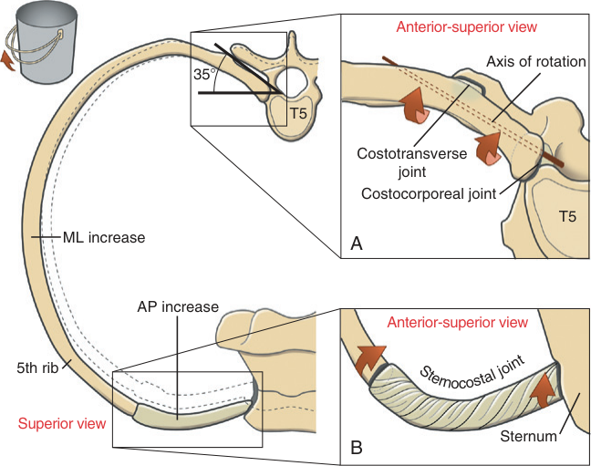
TẬP TRUNG ĐẶC BIỆT 11.4 — Các yếu tố có thể cản trở sự nở rộng của lồng ngực (Factors That Can Oppose Expansion of the Thorax)
Công việc mà các cơ hít vào thực hiện phải vượt qua sự đàn hồi trở lại tự nhiên của mô phổi và các mô liên kết cấu thành lồng ngực. Công việc bổ sung được thực hiện để vượt qua sự cản trở của không khí được hít vào khi nó đi qua các đường thở rộng lớn. Lượng không khí đến được các túi phế nang phụ thuộc vào áp suất phế nang giảm, vốn được xác định một phần bởi tác động ròng của sự co cơ và các tính chất cơ học cản trở sự nở rộng của lồng ngực.
Một số yếu tố có thể cản trở đáng kể sự nở rộng của lồng ngực. Tuổi cao, chẳng hạn, liên quan với độ cứng tăng (khả giãn giảm) của các khớp và các mô liên kết cấu thành lồng sườn. Tuy nhiên, mô phổi lại mất sự đàn hồi trở lại và trở nên có khả năng giãn nở hơn khi tuổi cao. (Khả giãn (compliance), trong ngữ cảnh này, là thước đo độ giãn nở được của phổi sinh ra bởi một mức giảm áp lực ngang phổi (transpulmonary pressure) cho trước.) Khả giãn ròng của toàn bộ hệ thống hô hấp (lồng ngực và phổi) giảm khi tuổi cao. Do đó, cần một mức giảm áp suất lớn hơn để hít vào một thể tích không khí cho trước. Về hiệu quả, các cơ phải làm việc vất vả hơn trong khi hít vào. Điều này một phần giải thích tại sao tuổi cao thường đi kèm với một sự giảm nhẹ về thể tích khí và một sự tăng nhẹ về tần số hô hấp.
Bệnh tật, các dính sau phẫu thuật, béo phì, hoặc sự lệch trục cơ–xương bất thường cũng có thể cản trở sự nở rộng của lồng ngực. Viêm khớp dạng thấp, chẳng hạn, có thể làm tăng độ cứng của sụn ở các khớp sườn–ức, nhờ đó cản trở sự tăng thể tích trong lồng ngực. Các bất thường tư thế liên quan đến vẹo cột sống (scoliosis) hoặc gù (kyphosis) mức độ nặng có thể giới hạn về mặt vật lý sự nở rộng của lồng ngực và cản trở cơ học của thông khí. Ngay cả ở những người khỏe mạnh, những thay đổi cực đoan của tư thế ngồi trong bất kỳ mặt phẳng chính (cardinal planes) nào cũng có ảnh hưởng đáng kể đến động học của thông khí.
Động học của thông khí rất phức tạp và bao gồm một số lượng lớn các tương tác cơ, trải khắp toàn bộ bộ xương trục. Một hệ thống vững chãi như vậy là cần thiết để kiểm soát chính xác nhiều mức cường độ thông khí khác nhau, gồm cả các hoạt động liên quan như nói, hát, cười, ngáp, hoặc nín thở khi bơi. Hơn nữa, các cơ thông khí thường xuyên và đồng thời tham gia vào việc kiểm soát tư thế, vận động và sự ổn định của thân và vùng sọ–cổ và, một cách gián tiếp, của các chi trên và chi dưới. Theo đó, sức mạnh và sức bền giảm của các cơ thông khí có thể ảnh hưởng tiêu cực đến nhiều hoạt động chức năng. May mắn thay, các cơ này có thể được rèn luyện mạnh lên giống như các cơ xương khác. Nghiên cứu đã chỉ ra rằng, trong phần lớn các trường hợp, cơ hoành — cơ hít vào chính — sẽ phì đại và trở nên mạnh hơn khi được thách thức với liều lượng phù hợp của bài tập kháng lực. Điều này đã được chứng minh trên một phổ rộng các độ tuổi, gồm cả những người 60–80 tuổi.
Vẫn còn rất nhiều điều cần được tìm hiểu về các chức năng cụ thể của các cơ thông khí. Một số phương pháp được dùng để nghiên cứu chủ đề này được liệt kê trong hộp sau đây.
Hộp: Các phép đo thông dụng được dùng để xác định các chức năng của các cơ thông khí (Common Measurements Used to Determine the Functions of the Ventilatory Muscles)
*Tài liệu tham khảo 12, 22, 42, 46, 49, 73, 93, 96, 104. (Chú thích gắn dấu * cho hộp này.)
Ngoài ra, các quan sát lâm sàng về các tác động của liệt cơ sau tổn thương tủy sống đã giúp ích rất nhiều cho việc hiểu chức năng bình thường của các cơ thông khí. Như sẽ được mô tả, bất kỳ cơ nào bám vào lồng ngực đều có khả năng thay đổi thể tích trong lồng ngực và nhờ đó hỗ trợ cơ học của thông khí. Cụ thể hơn, một cơ làm tăng thể tích trong lồng ngực là một cơ hít vào; một cơ làm giảm thể tích trong lồng ngực là một cơ thở ra. Giải phẫu chi tiết và thần kinh chi phối của các cơ thông khí được trình bày xuyên suốt Phụ lục III, Phần C, đặc biệt trong phần về các cơ liên quan chủ yếu đến thông khí.
Các cơ hít vào nhẹ là cơ hoành, các cơ bậc thang và các cơ liên sườn (được ôn lại trong Hình 11.24). Các cơ này hoạt động ngay cả khi nghỉ, và mức kích hoạt của chúng tăng lên khi cường độ công việc lớn hơn. Cách tác động và thần kinh chi phối của các cơ hít vào chính được tóm tắt trong Bảng 11.4.
| Cơ (Muscle) | Cách tác động (Mode of Action) | Thần kinh chi phối (Innervation) | Vị trí các hình minh họa (Location of Illustrations) |
|---|---|---|---|
| Cơ hoành (Diaphragm) | Chính: Vòm của cơ hoành đang co hạ xuống và dẹt đi trong lúc hít vào. Vận động này làm tăng đường kính đứng dọc của lồng ngực. Phụ: Sự hạ xuống của cơ hoành bị vùng bụng kháng lại, điều này ngược lại giúp ổn định vị trí của vòm cơ hoành. Sự co thêm của cơ hoành có thể nâng các xương sườn dưới lên. | Thần kinh hoành (C3–C5) (Phrenic nerve (C3–C5)) | Chương 11 (Hình 11.27) |
| Các cơ bậc thang (Scalenes) | Cơ bậc thang trước, giữa và sau làm tăng thể tích trong lồng ngực bằng cách nâng các xương sườn và xương ức lên. | Các nhánh bụng của các rễ thần kinh tủy (C3–C7) (Ventral rami of spinal nerve roots (C3–C7)) | Chương 10 (Chapter 10) |
| Các cơ liên sườn (Intercostales) | Các sợi cạnh ức của cơ liên sườn trong và cơ liên sườn ngoài làm tăng thể tích trong lồng ngực bằng cách nâng các xương sườn lên. Trong lúc hít vào, các cơ liên sườn ổn định các khoảng liên sườn để ngăn thành ngực bị sụp vào trong. | Các thần kinh liên sườn (T2–T12) (Intercostal nerves (T2–T12)) | Chương 11 (Hình 11.28) |
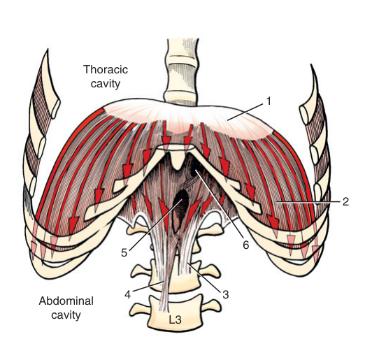
Cơ hoành là một tấm mô cơ–gân mỏng, hình vòm, ngăn cách khoang ngực với khoang bụng. Mặt trên lồi của nó là nền của khoang ngực, còn mặt dưới lõm là mái của khoang bụng (Hình 11.27).
Cơ hoành có ba phần, được phân định dựa trên giải phẫu các chỗ bám xương: phần sườn (costal part) bắt nguồn từ các bờ trên của sáu xương sườn dưới; phần ức (sternal part) tương đối nhỏ và hay biến đổi, bắt nguồn từ mặt sau của mỏm xiphoid (xiphoid process); còn phần chân (crural part) dày hơn, bám vào các thân của ba đốt sống thắt lưng trên qua hai chỗ bám gân riêng biệt gọi là chân phải và chân trái (right and left crus). Phần chân của cơ hoành chứa các sợi cơ dài nhất và hướng thẳng đứng nhất. Một số sợi trong số đó hòa vào dây chằng dọc trước của cột sống. Hơn nữa, giải phẫu trên xác chết cho thấy một số sợi của phần chân trộn lẫn với các chỗ bám gần của cơ thắt lưng lớn (psoas major).
Ba bộ chỗ bám của cơ hoành hội tụ để tạo thành gân trung tâm (central tendon) ở đỉnh vòm trên của cơ. Mỗi nửa cơ hoành nhận thần kinh chi phối qua thần kinh hoành (phrenic nerve), với các rễ thần kinh xuất phát từ các rễ thần kinh tủy C3–C5, nhưng chủ yếu là C4.
Do vị trí của gan trong bụng, bên phải của cơ hoành khi nghỉ nằm hơi cao hơn bên trái. Trong lúc hít vào nhẹ (quiet inspiration), vòm của cơ hoành hạ xuống khoảng 1,5 cm. Trong lúc hít vào gắng sức, cơ hoành dẹt đi và có thể hạ xuống tới 6 đến 10 cm. Ở mức hít vào cực đại, bên phải hạ xuống tới mức của thân đốt T11; bên trái hạ xuống tới mức của thân đốt T12.
Cơ hoành là cơ quan trọng nhất của động tác hít vào, đảm nhận 60% đến 80% công việc của quá trình thông khí. Vai trò nổi trội của cơ này trong hít vào phần lớn là do khả năng làm tăng thể tích trong lồng ngực (intrathoracic volume) ở cả ba đường kính: đứng dọc, trong–ngang và trước–sau. Vì vậy, một mức co cơ cho trước sẽ cho ra một mức giảm áp lực trong lồng ngực tương đối lớn.
Cơ hoành là cơ đầu tiên được hệ thần kinh kích hoạt trong một nỗ lực hít vào. Khi các xương sườn dưới được ổn định, sự co ban đầu của cơ hoành gây ra sự hạ xuống và dẹt đi của vòm của nó (xem Hình 11.27). Tác động hạ xuống như piston này làm tăng đáng kể đường kính đứng dọc của lồng ngực. Đây là phương thức chính mà cơ hoành làm tăng thể tích trong lồng ngực. Một mức tăng thể tích bổ sung đòi hỏi có lực kháng từ bên trong bụng. Sự hạ xuống của cơ hoành vào khoang bụng bị kháng lại bởi sự tăng áp lực trong bụng (intra-abdominal pressure); bởi các tạng bụng bị nén ép; và bởi sự căng thụ động của các cơ bụng bị kéo giãn, chẳng hạn như cơ ngang bụng. Đến một mức nào đó, lực kháng từ bụng này ổn định vị trí của vòm cơ hoành, cho phép sự co tiếp diễn của nó nâng sáu xương sườn dưới lên. Có thể hình dung sự nâng này bằng cách đảo ngược hướng của các đầu mũi tên trong Hình 11.27. Như đã mô tả trước đó, sự nâng của các xương sườn làm nở lồng ngực theo các đường kính trước–sau và trong–ngang.
Vai trò chủ đạo của cơ hoành trong thông khí từ lâu đã được thừa nhận. Tuy nhiên, các nghiên cứu gần đây mạnh mẽ cho thấy cơ này còn có thể mang lại sự ổn định tư thế cho thân mình. Chức năng ổn định này dựa trên các chỗ bám rộng lớn của cơ vào bộ xương trục, kết hợp với khả năng làm tăng áp lực trong bụng khi kết hợp với sự kích hoạt mạnh của các cơ bụng và các cơ sàn chậu (đã ôn lại trong Chương 10). Hơn nữa, sự kích hoạt các sợi phần chân của cơ hoành nhiều khả năng còn giúp đỡ một phần cơ học cho các vùng trên và giữa của cột sống thắt lưng. Ít nhất về mặt lý thuyết, sự yếu hay chức năng bất thường của cơ hoành có thể liên quan đến bệnh cơ học (pathomechanics) của đau thắt lưng dưới.
Các cơ bậc thang trước, giữa và sau (scalenus anterior, medius, posterior) bám giữa cột sống cổ và hai xương sườn trên (xem Chương 10). Nếu coi cột sống cổ được ổn định tốt, sự co hai bên của các cơ này làm tăng thể tích trong lồng ngực bằng cách nâng các xương sườn trên và xương ức gắn kèm. Các cơ bậc thang hoạt động cùng với cơ hoành trong mọi chu kỳ hít vào.
Các cơ liên sườn là một bộ cơ mỏng gồm ba lớp chiếm các khoảng liên sườn (intercostal spaces). Mỗi bộ cơ liên sườn trong một khoảng liên sườn cho trước được chi phối bởi một thần kinh liên sườn kế cận (Hình 11.28).
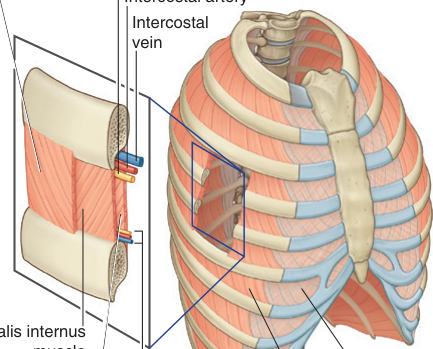
Cơ liên sườn ngoài (intercostales externi) nằm nông nhất, tương đồng về độ sâu và hướng sợi với cơ chéo bụng ngoài (obliquus abdominis externus) của thân mình (xem Chương 10). Mỗi bên có 11 cơ, và mỗi cơ liên sườn ngoài bắt nguồn từ bờ dưới của một xương sườn và bám vào bờ trên của xương sườn ngay dưới nó (xem hình chèn trong Hình 11.28). Các sợi chạy chéo giữa các xương sườn theo hướng xuống dưới và vào trong. Cơ liên sườn ngoài phát triển mạnh nhất ở phía bên. Về phía trước, trong vùng các khớp sườn–ức (sternocostal joints), cơ liên sườn ngoài được thay thế bởi một màng liên sườn ngoài (external intercostal membrane) mỏng.
Cơ liên sườn trong (intercostales interni) nằm sâu dưới cơ ngoài và tương đồng về độ sâu và hướng sợi với cơ chéo bụng trong (obliquus abdominis internus) của thân mình. Mỗi bên cũng có 11 cơ, mỗi cơ chiếm 1 khoảng liên sườn, tương tự như ở cơ liên sườn ngoài. Tuy nhiên, một khác biệt chủ yếu là các sợi của cơ liên sườn trong chạy vuông góc với các sợi của cơ liên sườn ngoài (xem hình chèn trong Hình 11.28). Cơ liên sườn trong phát triển mạnh nhất về phía trước, trong vùng các khớp sườn–ức; về phía sau, các cơ này tận cùng bằng màng liên sườn trong (internal intercostal membrane).
Chủ yếu do những khác biệt về chức năng, tài liệu nghiên cứu gần đây thường gọi cơ liên sườn trong là hai bộ sợi cơ khác nhau: các cơ liên sườn cạnh ức (parasternal intercostals), chiếm vùng các khớp sườn–ức; và các cơ liên sườn giữa xương (interosseous intercostals), chiếm các khoảng liên sườn ở phía bên và sau–bên. Thuật ngữ này sẽ được dùng trong các phần thảo luận tiếp theo.
Cuối cùng, cơ liên sườn trong cùng (intercostales intimi) là cơ nằm sâu nhất và kém phát triển nhất trong số các cơ liên sườn. Thường được gọi là “các cơ liên sườn trong cùng nhất” (“innermost intercostals”), các cơ này chạy song song và nằm sâu dưới cơ liên sườn trong (xem hình chèn trong Hình 11.28). Các sợi của cơ liên sườn trong cùng nằm gần góc sườn (angle of the ribs) — thường được gọi là các cơ dưới sườn (subcostales muscles) — có thể vắt qua một hay hai khoảng liên sườn. Cơ liên sườn trong cùng phát triển mạnh nhất ở phần ngực dưới. Tác động của các cơ sâu và khá khó tiếp cận này chưa được nghiên cứu rộng rãi. Tuy nhiên, có lý để suy đoán rằng chúng có các tác động tương tự như của cơ liên sườn trong kế cận.
Các cơ liên sườn ngoài và trong thường được gọi không chính thức lần lượt là “cơ liên sườn ngoài và cơ liên sườn trong” (“external and internal intercostals”). Các tác động cụ thể của các cơ liên sườn trong thông khí vẫn chưa được hiểu đầy đủ. Quan niệm thông thường về chủ đề này là các cơ liên sườn ngoài điều khiển hít vào, còn các cơ liên sườn trong điều khiển thở ra gắng sức. Ở mức độ lớn, các chức năng này dựa trên các đường lực (hướng sợi) tương phản của các cơ so với trục xoay đi qua đầu sau của các xương sườn. Về lý thuyết, sự co đơn độc của một cơ liên sườn ngoài có lợi thế đòn bẩy lớn hơn để nâng xương sườn dưới so với hạ xương sườn trên. Ngược lại, sự co đơn độc của một cơ liên sườn trong có lợi thế đòn bẩy lớn hơn để hạ xương sườn trên so với nâng xương sườn dưới.
Mặc dù các tác động qua lại tương đối đơn giản đã đề xuất của cơ liên sườn ngoài và trong nhìn chung đã được các phương pháp nghiên cứu EMG và khác ủng hộ, động học cơ tổng thể lại có vẻ phức tạp hơn. De Troyer và các cộng sự đưa ra một lập luận thuyết phục rằng tác động của bất kỳ cơ liên sườn nào cũng chịu ảnh hưởng không chỉ bởi hướng sợi và đường kéo của nó mà còn — có lẽ quan trọng hơn — bởi các yếu tố gắn với vùng cụ thể nơi cơ cư trú. Các yếu tố đặc thù theo vùng này gồm khả năng sinh lực và sinh mô men của các cơ địa phương (dựa tương ứng trên diện tích cắt ngang và chiều dài cánh tay đòn), độ cong của các xương sườn, tác động ổn định của các cơ khác, và (quan trọng nhất) các mức độ khác nhau của xung thần kinh (neural drive).
Mặc dù các tác động cụ thể của các cơ liên sườn rất thay đổi và chưa được hiểu đầy đủ, các phát biểu tóm tắt sau đây phản ánh những kết quả nhất quán nhất từ nghiên cứu trên động vật và người.
Ngoài chức năng là các cơ hít vào hay thở ra, bộ cơ liên sườn phía bên (cả ngoài lẫn trong) còn thể hiện mức kích hoạt đáng kể trong xoay trục của thân mình. Theo cách tương tự như các “cơ bụng chéo” (“oblique abdominals”) (xem Chương 10), các cơ liên sườn ngoài hoạt động mạnh nhất trong xoay thân về bên đối (contralateral), và các cơ liên sườn nằm trong hơn hoạt động mạnh nhất trong xoay thân cùng bên (ipsilateral). Mức đóng góp tương đối của các cơ này vào cơ sinh học tổng thể của xoay trục thân mình vẫn chưa rõ.
Ngoài việc làm nở thể tích trong lồng ngực trong lúc hít vào, sự co của các cơ liên sườn ngoài và các cơ liên sườn cạnh ức còn tạo độ cứng vững cho lồng ngực. Tuy thường bị xem nhẹ, chức năng ổn định này là một thành phần rất quan trọng của thông khí. Với sự trợ giúp của các cơ bậc thang, tác động nẹp (splinting action) lên các xương sườn ngăn thành ngực bị hút xoáy vào trong một phần bởi áp lực trong lồng ngực giảm xuống do sự co của cơ hoành.
Khi các cơ liên sườn co để làm cứng lồng ngực trong lúc hít vào, các cơ nằm ở vùng hầu cũng co nhẹ để làm cứng và giãn nở đường thở trên (upper airway). Một trong những cơ giãn đường thở trên chính là cơ găn blưỡi (genioglossus), một cơ ngoại sinh chủ đạo của lưỡi.
TẬP TRUNG ĐẶC BIỆT 11.5 — “Thở nghịch thường” sau tổn thương tủy sống cổ (“Paradoxical Breathing” after Cervical Spinal Cord Injury)
Ở người khỏe mạnh, thông khí thường đi kèm một kiểu vận động đặc trưng giữa lồng ngực và bụng. Trong lúc hít vào, lồng ngực nở ra phía ngoài do sự nâng của các xương sườn. Bụng thường hơi nhô ra trước do sự dịch chuyển về trước của các tạng trong bụng (abdominal viscera), bị nén ép bởi cơ hoành đang hạ xuống.
Một tổn thương tủy sống cổ hoàn toàn dưới đốt sống C4 thường không làm liệt cơ hoành vì thần kinh chi phối của nó chủ yếu đến từ rễ thần kinh tủy C4. Tuy nhiên, các cơ liên sườn và các cơ bụng thường bị liệt hoàn toàn. Người có mức tổn thương tủy sống này thường thể hiện kiểu “thở nghịch thường” (paradoxical breathing). Bệnh cơ học của kiểu thở này mang lại cái nhìn sâu sắc về những tương tác chức năng quan trọng giữa cơ hoành, các cơ liên sườn và các cơ bụng trong lúc hít vào.
Không có tác động nẹp của các cơ liên sườn bắc qua các khoảng liên sườn, sự hạ xuống của vòm cơ hoành tạo ra một lực hút âm bên trong lồng ngực làm thắt hẹp phần ngực trên, đặc biệt theo đường kính trước–sau. Thuật ngữ thở nghịch thường mô tả sự thắt hẹp — thay vì sự nở rộng bình thường — của lồng ngực trong lúc hít vào. VIDEO 11.1 cho thấy một người bị bại tứ chi (tetraplegia (quadriplegia)) mức C6 thể hiện kiểu thở nghịch thường đã mô tả khi đang nghỉ và nằm ngửa.
Sự thắt hẹp nghịch thường của lồng ngực, như đã mô tả ở trên, có thể làm giảm dung tích sống (vital capacity) của một người bị tổn thương tủy sống cổ cấp tính. Ở người trưởng thành khỏe mạnh, dung tích sống khoảng 4500 mL (xem lại Hình 11.23). Khoảng 3000 mL trong thể tích hít vào này là do sự co và sự hạ xuống đầy đủ của cơ hoành. Dung tích sống của một người ngay sau tổn thương tủy sống ở C4 có thể giảm xuống còn 300 mL. Mặc dù cơ hoành có thể vẫn hoạt động gần mức bình thường, lồng ngực đang thắt hẹp (thay vì nở rộng bình thường) hạn chế việc hít vào 2700 mL không khí. Tuy nhiên, vài tuần hay vài tháng sau tổn thương tủy sống, các cơ liên sườn mất trương lực (nhẽo) thường trở nên cứng hơn. Trương lực cơ tăng lên có thể đóng vai trò như một thanh nẹp cho thành ngực, như chứng minh bởi thực tế rằng dung tích sống của một người trưởng thành cỡ trung bình bị tổn thương ở C4 hay dưới C4 thường trở về gần 3000 mL.
Ngoài sự thắt hẹp của phần ngực trên trong lúc hít vào, người bị tổn thương tủy sống cổ cấp tính thường thể hiện sự nhô rõ bụng về phía trước trong lúc hít vào. Các cơ bụng mất trương lực và bị liệt chỉ tạo ra rất ít lực kháng chống lại sự di chuyển về trước của các tạng trong bụng. Không có lực kháng này, cơ hoành đang co mất hiệu quả trong việc nở các xương sườn giữa và dưới. Các bệnh cơ học này cũng góp phần vào sự mất dung tích sống sau tổn thương tủy sống cổ.
Người bị tổn thương tủy sống cổ cấp tính dẫn đến bại tứ chi có thể được khuyên đeo một băng bụng co giãn (elastic abdominal binder) để hỗ trợ khi ngồi thẳng. Ở tư thế ngồi, vòm của cơ hoành nằm thấp hơn so với tư thế nằm ngửa. Bằng cách bắt chước một phần trương lực của các cơ bụng còn được chi phối thần kinh, băng bụng tạo ra một lực kháng hữu ích chống lại sự hạ xuống của cơ hoành. Nghiên cứu quả thực đã cho thấy sự cải thiện chức năng thông khí khi đeo băng bụng ở những người cả bị bại tứ chi cấp tính (1 năm) lẫn lâu năm (trung bình 10 năm). Các cải thiện khác nhau nhưng gồm sự tăng đáng kể dung tích sống, tổng dung tích hít vào, thể tích thở ra gắng sức trong 1 giây (forced expiratory volume in 1 sec), và sự giảm dung tích dự trữ chức năng (functional residual capacity). Lực kháng thay thế (surrogate resistance) mà băng bụng tạo ra có thể đặc biệt hữu ích trong khoảng thời gian ngay sau tổn thương tủy sống, trước khi một phần độ cứng của các cơ bụng được dự đoán sẽ quay trở lại. Những lý do thực dụng, chẳng hạn như sự thoải mái, kích ứng da và khó khăn khi mang băng, có thể hạn chế việc dùng băng bụng lâu dài.
Sự điều khiển thần kinh của cơ này trong khi thở đã được nghiên cứu sâu rộng, chủ yếu vì vai trò có thể có của nó trong ngưng thở khi ngủ do tắc nghẽn (obstructive sleep apnea).
Hít vào gắng sức đòi hỏi các cơ bổ sung để hỗ trợ các cơ hít vào chính. Với tư cách một nhóm, các cơ bổ sung này được gọi là các cơ hít vào gắng sức (muscles of forced inspiration), hay các cơ hít vào phụ (accessory muscles of inspiration). Bảng 11.5 liệt kê một mẫu một số cơ hít vào gắng sức, kèm theo cách tác động có thể có của chúng. Mỗi cơ có một đường lực có thể trực tiếp hoặc gián tiếp làm tăng thể tích trong lồng ngực. Phần lớn các cơ được liệt kê trong Bảng 11.5 được minh họa ở nơi khác trong giáo trình này. Cơ răng sau trên và cơ răng sau dưới được minh họa trong Hình 11.29.
Các cơ hít vào gắng sức thường được sử dụng ở người khỏe mạnh để tăng tốc độ và thể tích không khí hít vào. Các cơ này cũng có thể được huy động ngay cả khi nghỉ ngơi để giúp bù đắp cho sự yếu, mệt mỏi hay chức năng giảm của một hay nhiều cơ hít vào chính, chẳng hạn như cơ hoành.
| Cơ (Muscle) | Cách tác động (Mode of Action) | Phân bố thần kinh (Innervation) | Vị trí minh họa (Location of Illustrations) |
|---|---|---|---|
| Cơ răng sau trên (Serratus posterior superior) | Tăng thể tích trong lồng ngực bằng cách nâng các xương sườn trên. | Các thần kinh liên sườn (Intercostal nerves) (T2–T5) | Chương 11 (Hình 11.29) |
| Cơ răng sau dưới (Serratus posterior inferior) | Ổn định các xương sườn dưới cho sự co ban đầu của cơ hoành. | Các thần kinh liên sườn (T9–T12) | Chương 11 (Hình 11.29) |
| Cơ nâng sườn, dài và ngắn (Levator costarum (longus and brevis)) | Tăng thể tích trong lồng ngực bằng cách nâng các xương sườn. | Các nhánh lưng của các rễ thần kinh tủy ngực kề bên (Dorsi rami of adjacent thoracic spinal nerve roots) (C7–T11) | Chương 10 |
| Cơ ức đòn chũm (Sternocleidomastoid) | Tăng thể tích trong lồng ngực bằng cách nâng xương ức và các xương sườn trên. | Nguồn chính: thần kinh phụ (dây sọ XI) (Primary source: spinal accessory nerve (cranial nerve XI)) | Chương 10 |
| Cơ lưng rộng (Latissimus dorsi) | Tăng thể tích trong lồng ngực bằng cách nâng các xương sườn dưới; đòi hỏi cánh tay được cố định. | Thần kinh ngực lưng (Thoracodorsal nerve) (C6–C8) | Chương 5 |
| Cơ chậu sườn ngực và cơ chậu sườn cổ (cơ dựng sống) (Iliocostalis thoracis and cervicis (erector spinae)) | Tăng thể tích trong lồng ngực bằng cách duỗi thân mình. | Các nhánh lưng kề bên của các rễ thần kinh tủy (Adjacent dorsal rami of spinal nerve roots) | Chương 10 |
| Cơ ngực nhỏ (Pectoralis minor) | Tăng thể tích trong lồng ngực bằng cách nâng các xương sườn trên; đòi hỏi sự kích hoạt từ các cơ như cơ thang và cơ nâng vai để ổn định xương bả vai. | Thần kinh ngực trong (Medial pectoral nerve) (C8–T1) | Chương 5 |
| Cơ ngực lớn (đầu ức–sườn) (Pectoralis major (sternocostal head)) | Tăng thể tích trong lồng ngực bằng cách nâng các xương sườn giữa và xương ức; tác động này đòi hỏi cánh tay được giữ cố định ở một tư thế gập hoặc dạng khớp vai ít nhất 90 độ. | Thần kinh ngực trong (C8–T1) | Chương 5 |
| Cơ vuông thắt lưng (Quadratus lumborum) | Ổn định các xương sườn dưới cho sự co của cơ hoành trong giai đoạn đầu của hít vào gắng sức. | Các nhánh bụng của các rễ thần kinh tủy (Ventral rami of spinal nerve roots) (T12–L3) | Chương 10 |
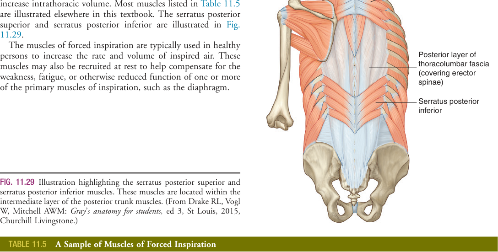
Thở ra nhẹ về bản chất bình thường là một quá trình thụ động, được dẫn động chủ yếu bởi sự đàn hồi trở lại của lồng ngực, phổi và cơ hoành đang thả lỏng. Ở phổi khỏe mạnh, quá trình thụ động này là đủ để thở ra khoảng 500 mL không khí vốn thường được giải phóng trong một lần thở ra nhẹ.
Trong thở ra gắng sức, cần có sự co cơ chủ động để giảm nhanh thể tích trong lồng ngực. Các cơ thở ra gắng sức gồm bốn cơ bụng, cơ ngang ngực và các sợi gian xương của cơ liên sườn trong (Hình 11.30). Cách tác động của các cơ thở ra gắng sức được tóm tắt trong Bảng 11.6.
Các cơ “bụng” gồm cơ thẳng bụng, cơ chéo bụng ngoài, cơ chéo bụng trong và cơ ngang bụng (xem Chương 10). Sự co của các cơ này có tác động trực tiếp và gián tiếp đến thở ra gắng sức. Khi tác động trực tiếp, sự co của các cơ bụng gập lồng ngực và hạ các xương sườn cùng xương ức xuống. Các tác động này làm giảm thể tích trong lồng ngực một cách nhanh chóng và dứt khoát, chẳng hạn như khi ho, hắt hơi, hoặc thở ra mạnh mẽ tới giới hạn của thể tích dự trữ thở ra. Khi tác động gián tiếp, sự co của các cơ bụng — đặc biệt là cơ ngang bụng — làm tăng áp suất trong ổ bụng và nén các tạng trong ổ bụng. Áp suất tăng này đẩy mạnh cơ hoành đang thả lỏng lên trên, sâu vào trong khoang ngực (xem Hình 11.30). Theo cách này, sự co chủ động của các cơ bụng tận dụng hình dáng “chiếc dù” (parachute-shaped) của cơ hoành để giúp đẩy không khí ra khỏi lồng ngực. Như đã mô tả trong Chương 10, áp suất trong ổ bụng tăng lên là một thành phần cơ bản của thao tác Valsalva, vốn có liên quan chức năng với nhiều hoạt động, gồm sinh nở, đi tiêu, và nâng, kéo mạnh mẽ.
Mặc dù các cơ bụng được mô tả ở đây là các cơ thở ra gắng sức, sự co của chúng cũng gián tiếp làm tăng hiệu quả của hít vào. Khi cơ hoành bị đẩy lên trên tại thời điểm thở ra cực đại, nó bị kéo giãn đến một điểm tối ưu trên đường quan hệ chiều dài–lực (length-tension curve). Hệ quả là cơ được chuẩn bị tốt hơn để khởi phát một sự co mạnh mẽ ở chu kỳ hít vào kế tiếp.
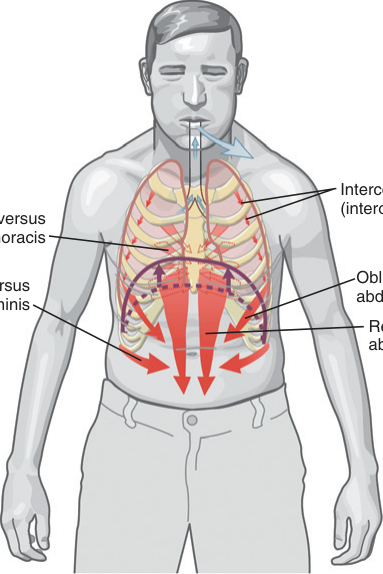
| Cơ (Muscle) | Cách tác động (Mode of Action) | Phân bố thần kinh (Innervation) | Vị trí minh họa (Location of Illustrations) |
|---|---|---|---|
| Các cơ bụng (Abdominal muscles): Cơ thẳng bụng (Rectus abdominis) Cơ chéo bụng ngoài (Obliquus externus abdominis) Cơ chéo bụng trong (Obliquus internus abdominis) Cơ ngang bụng (Transversus abdominis) | 1. Giảm thể tích trong lồng ngực bằng cách gập thân mình và hạ các xương sườn. 2. Nén thành bụng và các tạng trong ổ bụng, làm tăng áp suất trong ổ bụng; kết quả là cơ hoành đang thả lỏng bị đẩy lên trên, làm giảm thể tích trong lồng ngực. | Các thần kinh liên sườn (T7–L1) | Chương 10 |
| Cơ ngang ngực (Transversus thoracis) | Giảm thể tích trong lồng ngực bằng cách hạ các xương sườn và kéo chúng vào trong (thắt chặt lồng ngực). | Các thần kinh liên sườn kề bên (Adjacent intercostal nerves) | Chương 11 (Hình 11.31) |
| Cơ liên sườn trong (các sợi gian xương) (Intercostales interni (interosseous fibers)) | Các sợi gian xương của cơ liên sườn trong giảm thể tích trong lồng ngực bằng cách hạ các xương sườn. | Các thần kinh liên sườn (T2–T12) | Chương 11 (Hình 11.28) |
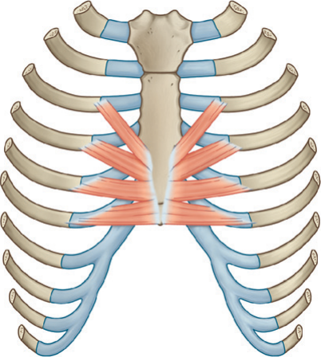
Cơ ngang ngực (transversus thoracis) (còn được gọi là cơ tam giác ức [triangularis sterni]) là một cơ của thở ra gắng sức. Cơ nằm ở mặt trong của lồng ngực, chạy ngang và chéo lên trên giữa phần một phần ba dưới của xương ức và các khớp sườn–ức của bốn hay năm xương sườn kề bên (Hình 11.31). Kích hoạt thần kinh của cơ được đồng bộ với các cơ bụng và các sợi gian xương của cơ liên sườn trong trong lúc thở ra gắng sức.
TẬP TRUNG ĐẶC BIỆT 11.6 — Các chức năng sinh lý quan trọng của các cơ bụng (Important Physiologic Functions of the Abdominal Muscles)
Thở ra gắng sức được dẫn động chủ yếu bằng sự co của các cơ bụng. Các cơ này tham gia mạnh mẽ vào một số chức năng liên quan đến thông khí, gồm hát, cười, ho và phản ứng thích đáng với phản xạ “nôn” (“gag” reflex) khi một người bị nghẹn. Hai chức năng sau đây đặc biệt thiết yếu đối với sức khỏe và sự an toàn của mỗi người. Ho hay “hắng giọng” một cách mạnh mẽ là cách tự nhiên để loại bỏ các dịch tiết khỏi cây phế quản, qua đó giảm khả năng nhiễm trùng phổi. Sự co mạnh của các cơ bụng cũng được dùng để đẩy các dị vật mắc kẹt trong khí quản ra ngoài.
Những người có các cơ bụng suy yếu hoặc hoàn toàn bị liệt phải học các cách ho thay thế hoặc nhờ người khác hỗ trợ “thủ công” chức năng này. Hãy xét, ví dụ, một người có tổn thương tủy sống hoàn toàn ở mức T4. Do phân bố thần kinh của các cơ bụng (các nhánh bụng của T7–L1), người này rất có thể bị liệt hoàn toàn các cơ bụng. Những người có các cơ bụng bị liệt hoặc suy yếu rất nhiều phải hết sức thận trọng để tránh bị nghẹn.
Thông khí tạo ra gradient áp suất trong lồng ngực cần thiết khiến không khí lưu trào (bulk flow) vào và ra khỏi phổi. Dòng không khí này cho phép trao đổi khí oxy và carbon dioxide trong phổi. Quá trình này duy trì sự chuyển hóa tế bào kiểu oxy hóa, thứ mà — cùng nhiều chức năng khác — cung cấp năng lượng cần cho vận động của con người. Phần 2 của chương này tập trung gần như độc quyền vào các tương tác cơ và khớp dẫn động cơ học của thông khí.
Bốn giai đoạn của thông khí đã được nghiên cứu: hít vào nhẹ, hít vào gắng sức, thở ra nhẹ và thở ra gắng sức. Ở mọi giai đoạn, trừ thở ra nhẹ, sự co cơ cung cấp cơ chế chính làm thay đổi thể tích bên trong lồng ngực linh hoạt. Dựa trên định luật Boyle, việc thay đổi thể tích trong lồng ngực có mối quan hệ nghịch với áp suất trong lồng ngực được chứa trong đó. Vì không khí tự phát chảy khỏi nơi có áp suất cao và về nơi có áp suất thấp, một lực cơ làm tăng thể tích trong lồng ngực sẽ hỗ trợ hít vào. Ngược lại, một lực cơ làm giảm thể tích trong lồng ngực sẽ hỗ trợ thở ra.
Sức căng thụ động được tạo ra trong các mô liên kết bị kéo giãn — nằm lồng trong cơ, các dây chằng và sụn của các khớp sườn–ức — cũng có một vai trò quan trọng trong thông khí, cụ thể là thở ra. Một khi bị kéo giãn sau khi hít vào, các mô liên kết này thể hiện “sự đàn hồi trở lại” (elastic recoil), giúp ép không khí ra khỏi phổi.
Bệnh lý, chấn thương, bất hoạt kéo dài và, ở một số người, tuổi cao có thể ảnh hưởng đáng kể đến cơ học của thông khí. Hãy xét, ví dụ, các tác động của chức năng cơ bất thường. Một ví dụ cực đoan là tổn thương tủy sống hoàn toàn trên mức C4, gây liệt hay ít nhất là yếu rõ rệt phần lớn các cơ thông khí chính, nổi bật nhất là cơ hoành. Nếu thiếu lực đủ mạnh từ cơ hoành, các nỗ lực nở rộng lồng ngực trong khi hít vào có thể chỉ sinh ra sự thay đổi áp suất trong lồng ngực rất nhỏ hoặc không có. Do đó, hít vào chỉ đưa vào phổi một lượng không khí không đáng kể, có thể không đủ để duy trì sự sống nếu không có can thiệp y tế.
Thông thường, can thiệp như vậy được cung cấp thông qua một máy thở cơ học (mechanical ventilator) — một thiết bị chạy bằng điện ép dòng khí có áp suất vào phổi (qua một đường mở khí quản — tracheotomy) với thể tích, tốc độ dòng, độ ẩm và nồng độ oxy được cài đặt sẵn.
Ngoài hoạt động bất thường của cơ, bệnh lý ảnh hưởng đến hệ xương và các hệ mô liên kết khác của lồng ngực cũng có thể ảnh hưởng đến cơ chế của thông khí. Hãy xét, ví dụ, vẹo cột sống mức độ vừa đến nặng (scoliosis), gù ngực sau chấn thương (posttraumatic thoracic kyphosis), hoặc viêm cột sống dính khớp giai đoạn muộn (ankylosing spondylitis). Tất cả các tình trạng này đều có thể cản trở sự nở rộng của lồng ngực và do đó làm giảm dung tích sống (vital capacity). Một tác động thứ phát thường gặp của các tình trạng này là khả năng dung nạp luyện tập giảm và sau đó là khó khăn trong việc duy trì một mức thể lực khí thẩm (aerobic fitness) lành mạnh. Khi khả thi, các can thiệp trị liệu dành cho những người này phải kết hợp các chiến lược sáng tạo vừa kích thích phù hợp hệ tim–phổi, vừa tôn trọng những giới hạn do bệnh lý chính áp đặt.
Một ví dụ khác về hoạt động cơ bất thường ảnh hưởng đến thông khí có thể xảy ra ở một số người mắc bại não (cerebral palsy). Mặc dù các cơ của người bệnh có thể được chi phối thần kinh đầy đủ, các cơ có thể biểu hiện trương lực quá mức. Chẳng hạn, trạng thái trương lực cao (hypertonicity) của các cơ bụng có thể dẫn đến một sự gia tăng áp lực trong bụng kéo dài và quá mức, cản trở sự hạ xuống của cơ hoành trong thì hít vào. Nếu cơ hoành không thể vượt qua lực cản này, dung tích sống có khả năng bị giảm có thể giới hạn sức bền thể chất của người bệnh trong các hoạt động khác, bao gồm cả hoạt động di chuyển (locomotion). Tình huống này có thể đặc biệt phù hợp nếu khả năng đi bộ của người bệnh vốn đã nặng nhọc do trương lực tăng, yếu cơ hoặc kiểm soát kém các cơ chi dưới.
KẾT NỐI LÂM SÀNG 11.1 — Ảnh hưởng của tư thế lên ứng suất tiềm năng tác dụng lên khớp thái dương–hàm (The Influence of Posture on the Potential Stress on the Temporomandibular Joint)
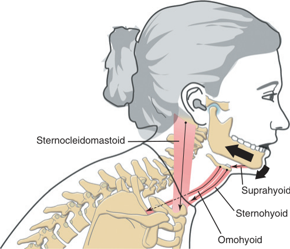
Dựa trên giải phẫu cơ, rất có thể tư thế của đầu và cổ ảnh hưởng đến tư thế nghỉ của xương hàm dưới. Hãy xét, ví dụ, tư thế đầu về trước mạn tính đã được mô tả trước đây trong Chương 9 và Chương 10. Người được vẽ trong Hình 11.32 cho thấy một biến thể của tư thế này. Hãy quan sát rằng đầu bị đưa về trước (protracted) kết hợp với vùng ngực trên và cột sống cổ dưới bị gập, cùng với vùng sọ–cổ trên bị duỗi. Tư thế này làm căng các cơ dưới móng, chẳng hạn cơ ức móng và cơ vai móng, vốn có thể tạo ra một lực kéo lên xương móng theo hướng xuống dưới và về sau. Lực kéo này được truyền đến xương hàm dưới thông qua các cơ trên móng, chẳng hạn bụng trước của cơ hai bụng (digastric). Kết quả là xương hàm dưới bị kéo theo hướng đưa về sau (retrusion) và hạ xuống (depression). Do cơ vai móng bám vào xương bả vai, tư thế kém của đai vai (tức một khớp bả vai–ngực bị hạ xuống, xoay xuống dưới hay xô ra trước quá mức) có thể tạo thêm sự căng giãn trên cơ này và vì vậy lực kéo thêm lên xương hàm dưới.
Việc thay đổi tư thế nghỉ của xương hàm dưới làm thay đổi vị trí của mỏm cầu hàm trong hố hàm dưới của xương thái dương. Về lý thuyết, một mỏm cầu hàm bị dịch lệch về sau có thể chèn ép các mô sau đĩa (retrodiscal tissues) mong manh, tạo nên tình trạng viêm và co thắt cơ. Co thắt cơ pterygoid ngoài có thể là một cơ chế bảo vệ tự nhiên nhằm đưa xương hàm dưới về trước, ra khỏi các mô sau đĩa bị chèn ép. Tuy nhiên, co thắt mạn tính trong cơ này có thể đặt đĩa khớp ở vị trí bất thường phía trước và phía trong so với mỏm cầu hàm. Tình trạng này có thể khiến một người dễ mắc chứng rối loạn bên trong đĩa khớp (internal derangement of the disc). Mặc dù một số dữ liệu gợi ý có mối liên hệ giữa tư thế sọ–cổ bất thường và các rối loạn của khớp thái dương–hàm (temporomandibular joint — TMJ), rất khó tìm được tài liệu hỗ trợ chứng minh một cách không mơ hồ mối quan hệ nhân–quả như vậy.
Một khái niệm nền tảng được đề cao trong phần thảo luận trước là động học của một phần bộ xương trục ảnh hưởng đến phần khác. Thông thường, mối tương quan động học này mang tính tích cực theo nghĩa nó tối ưu hóa sự dễ dàng và hiệu quả sinh lý của vận động. Tuy nhiên, tư thế bất thường có thể ảnh hưởng tiêu cực đến mối quan hệ này. Như đã mô tả trước đây, tư thế bất thường của khớp bả vai–ngực ảnh hưởng đến tư thế xương hàm dưới, và cuối cùng làm tăng ứng suất lên khớp thái dương–hàm. Tiền đề này nên củng cố quan điểm vốn được chấp nhận trong lâm sàng rằng việc đánh giá một người mắc rối loạn thái dương–hàm cần bao gồm một phân tích kỹ lưỡng tư thế của toàn bộ thân mình, từ cột sống thắt lưng đến vùng sọ–cổ.
KẾT NỐI LÂM SÀNG 11.2 — Bệnh phổi tắc nghẽn mạn tính: Cơ học cơ bị thay đổi (Chronic Obstructive Pulmonary Disease: Altered Muscle Mechanics)
Bệnh phổi tắc nghẽn mạn tính (chronic obstructive pulmonary disease — COPD) là một rối loạn thường bao gồm ba thành phần: (1) viêm phế quản mạn tính, (2) khí phế thũng (emphysema) và (3) hen suyễn (asthma). Các triệu chứng gồm viêm mạn tính và hẹp các tiểu phế quản, ho mạn tính và các đường thở đầy chất nhầy, kèm theo sự giãn quá mức và phá hủy các túi phế nang. Một biến chứng quan trọng của COPD là sự suy mất tính đàn hồi trở lại (elastic recoil) trong phổi và các tiểu phế quản bị xẹp. Kết quả là không khí vẫn bị kẹt lại trong phổi vào cuối thì thở ra nhẹ hay thở ra gắng sức. Ở các trường hợp tiến triển, lồng ngực vẫn ở một trạng thái căng phồng tương đối mạn tính, bất kể pha thực tế của thông khí. Biến chứng này được gọi là tình trạng căng phổi quá mức (hyperinflation of the lungs). Do đó, lồng ngực của một người mắc COPD thường phát triển vẻ ngoài “hình thùng” (barrel-shaped), mô tả một sự nở rộng cố định của ngực và lồng sườn, chủ yếu theo các hướng trước–sau.
Lượng không khí dư thừa trong phổi vào cuối thì thở ra có thể làm thay đổi vị trí và hình học của các cơ hít vào, đặc biệt là cơ hoành. Ở các trường hợp nặng, cơ hoành nằm tương đối thấp trong lồng ngực, với vòm bị san phẳng. Sự thay đổi vị trí và hình dạng này có thể làm thay đổi chiều dài nghỉ và đường lực của cơ. Hoạt động ở một chiều dài bị rút ngắn mạn tính làm giảm hiệu quả của cơ — thường được đo bằng tỷ lệ giữa công suất đầu ra trên mỗi mức kích hoạt cơ. Hơn nữa, vị trí thấp xuống có thể chuyển hướng đường lực của các sợi sườn (costal fibers) sang một hướng nằm ngang hơn (đã được xem lại trong Hình 11.27). Hệ quả là cơ mất một phần hiệu quả của nó trong việc nâng các xương sườn. Ở một vị trí đủ thấp, đường lực của cơ có thể một cách nghịch lý kéo các xương sườn dưới vào phía trong, về phía đường giữa cơ thể, do đó ức chế sự nở rộng bên của các xương sườn. Các yếu tố này có thể làm giảm đáng kể hiệu quả của cơ hoành trong việc làm đầy phổi trong thì hít vào.
Do chức năng của cơ hoành bị suy giảm và lực cản dòng khí tăng lên ở các tiểu phế quản bị hẹp, những người mắc COPD giai đoạn tiến triển thường sử dụng quá mức một số cơ nhất định trong thì hít vào nhẹ. Các cơ như cơ bậc thang và các cơ hít vào phụ khác (chẳng hạn cơ ức đòn chũm và cơ dựng sống) có vẻ hoạt động quá mức đồng pha với thì hít vào, ngay cả ở các mức gắng sức tương đối thấp. Thường gặp, một người mắc COPD có thể đứng hoặc đi bộ với cơ thể hơi cúi về trước trong khi đặt một hay cả hai cánh tay lên một vật ổn định, chẳng hạn lưng ghế, xe đẩy hàng tạp hóa, hoặc khung tập đi (walker). Chiến lược này cố định các chỗ bám xa của các cơ cánh tay, chẳng hạn đầu ức sườn của cơ ngực lớn và cơ lưng rộng. Hệ quả là các cơ này có thể hỗ trợ thì hít vào bằng cách nâng xương ức và các xương sườn. Mặc dù phương pháp này làm tăng số lượng cơ sẵn có để hỗ trợ hít vào, nó cũng làm tăng khối lượng công việc của việc đứng và đi bộ, thường khởi phát một vòng luẩn quẩn của mệt mỏi và khó thở (dyspnea) gia tăng.
PHẦN 1: NHAI (PART 1: MASTICATION)
PHẦN 2: HÔ HẤP (PART 2: VENTILATION)
Đáp án cho các câu hỏi nghiên cứu có trên trang web Evolve.
TẤT CẢ VIDEO của chương này có thể được truy cập bằng cách quét mã QR nằm ở bên phải.
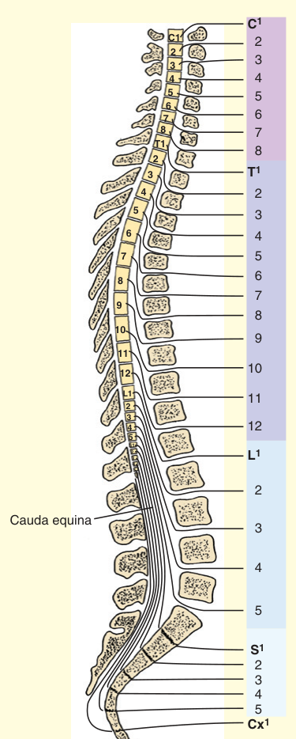
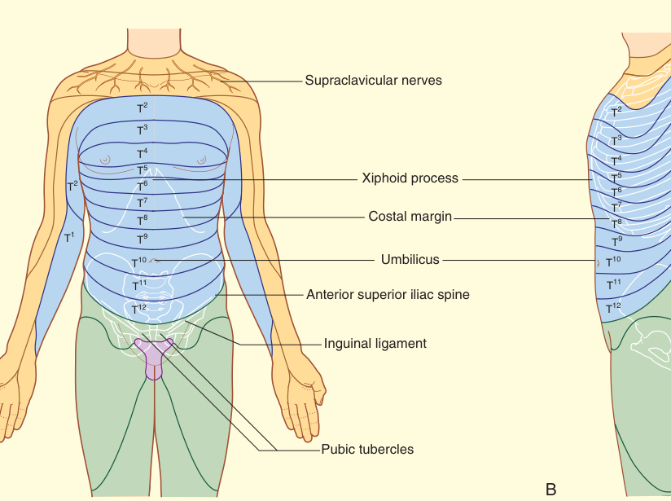
Xem Phụ lục II để biết các chỗ bám và phân bố thần kinh của các cơ thuộc lớp nông của thân mình sau (cơ thang, cơ lưng rộng, cơ răng trước, v.v.).
Nhóm cơ dựng sống (cơ chậu sườn, cơ dài nhất và cơ gai) (Erector Spinae Group (Iliocostalis, Longissimus, and Spinalis Muscles))
Cơ chậu sườn thắt lưng (Iliocostalis Lumborum)
Chỗ bám dưới (Inferior attachment): gân chung*
Chỗ bám trên (Superior attachments): góc của các xương sườn 6 đến 12
Cơ chậu sườn ngực (Iliocostalis Thoracis)
Chỗ bám dưới (Inferior attachments): góc của các xương sườn 6 đến 12
Chỗ bám trên (Superior attachments): góc của các xương sườn 1 đến 6
Cơ chậu sườn cổ (Iliocostalis Cervicis)
Chỗ bám dưới (Inferior attachments): góc của các xương sườn 3 đến 7
Chỗ bám trên (Superior attachments): các củ sau của các mỏm ngang của C4 đến C6
Cơ dài nhất ngực (Longissimus Thoracis)
Chỗ bám dưới (Inferior attachment): gân chung
Chỗ bám trên (Superior attachments): củ và góc của các xương sườn 3 đến 12; các mỏm ngang của T1 đến T12
Cơ dài nhất cổ (Longissimus Cervicis)
Chỗ bám dưới (Inferior attachments): các mỏm ngang của T1 đến T4
Chỗ bám trên (Superior attachments): các củ sau của các mỏm ngang của C2 đến C6
Cơ dài nhất đầu (Longissimus Capitis)
Chỗ bám dưới (Inferior attachments): các mỏm ngang của T1 đến T5 và các mỏm khớp của C4 đến C7
Chỗ bám trên (Superior attachments): bờ sau của mỏm chũm của xương thái dương
Cơ gai ngực (Spinalis Thoracis)
Chỗ bám dưới (Inferior attachment): gân chung
Chỗ bám trên (Superior attachments): các mỏm gai của hầu hết các đốt sống ngực
Cơ gai cổ (Spinalis Cervicis)
Chỗ bám dưới (Inferior attachments): dây chằng gáy và các mỏm gai của C7 đến T1
Chỗ bám trên (Superior attachments): mỏm gai của C2
Cơ gai đầu (hoà lẫn với cơ bán gai đầu) (Spinalis Capitis (Blends with Semispinalis Capitis))
Phân bố thần kinh của cơ dựng sống (Innervation to the erector spinae): các nhánh sau của các rễ thần kinh tủy liền kề (C3–L5)
*Gân chung rộng nối đầu dưới của phần lớn cơ dựng sống với nền của bộ xương trục. Các chỗ bám cụ thể của gân này gồm xương cùng, các mỏm gai và các dây chằng trên gai ở vùng ngực dưới và toàn bộ vùng thắt lưng, các mào chậu, các dây chằng cùng–ụ ngồi và cùng–chậu, cơ mông lớn, và các cơ nhiều đoạn.
Nhóm cơ ngang–gai (cơ nhiều đoạn, cơ xoay và cơ bán gai) (Transversospinal Group (Multifidi, Rotatores, and Semispinalis Muscles))
Cơ nhiều đoạn (Multifidi)
Chỗ bám dưới (thắt lưng) (Inferior attachments (lumbar)): các thể núm vú của các đốt sống thắt lưng, các dây chằng thắt lưng–cùng, phần sâu của gân chung của cơ dựng sống, mặt sau của xương cùng, gai chậu sau trên của khung chậu, và bao khớp của các khớp mỏm khớp thắt lưng và thắt lưng–cùng
Chỗ bám dưới (ngực) (Inferior attachments (thoracic)): các mỏm ngang của T1 đến T12
Chỗ bám dưới (cổ) (Inferior attachments (cervical)): các mỏm khớp của C3 đến C7
Chỗ bám trên (Superior attachments): các mỏm gai của các đốt sống nằm cao hơn hai đến bốn khớp liên đốt
Phân bố thần kinh (Innervation): các nhánh sau của các rễ thần kinh tủy liền kề (C4–S3)
Cơ xoay: dài và ngắn (Rotatores: Longus and Brevis)
Chỗ bám dưới (Inferior attachments): các mỏm ngang của tất cả các đốt sống
Chỗ bám trên (Superior attachments): nền của các mỏm gai và các mảnh cung liền kề của các đốt sống nằm cao hơn một hoặc hai phân đoạn
GHI CHÚ (NOTE): Cơ xoay dài băng qua hai khớp liên đốt; cơ xoay ngắn nằm ngang hơn chỉ băng qua một khớp liên đốt.
Phân bố thần kinh (Innervation): các nhánh sau của các rễ thần kinh tủy liền kề (C4–L4)
Cơ bán gai ngực (Semispinalis Thoracis)
Chỗ bám dưới (Inferior attachments): các mỏm ngang của T6 đến T10
Chỗ bám trên (Superior attachments): các mỏm gai của C6 đến T4
Cơ bán gai cổ (Semispinalis Cervicis)
Chỗ bám dưới (Inferior attachments): các mỏm ngang của T1 đến T6
Chỗ bám trên (Superior attachments): các mỏm gai của C2 đến C5, chủ yếu là C2
Cơ bán gai đầu (Semispinalis Capitis)
Chỗ bám dưới (Inferior attachments): các mỏm ngang của C7 đến T7
Chỗ bám trên (Superior attachments): các mỏm khớp của C4–C6; tiếp tục hướng lên trên để bám vào khoảng giữa đường gai trên và đường gai dưới của xương chẩm
Phân bố thần kinh của các cơ bán gai (Innervation to the semispinalis muscles): các nhánh sau của các rễ thần kinh tủy liền kề (C1–T6)
Nhóm cơ đốt ngắn (cơ liên gai và cơ liên mỏm ngang) (Short Segmental Group (Interspinalis and Intertransversarius Muscles))
Cơ liên gai (Interspinalis Muscles)
Các cơ theo cặp này bám đều đặn giữa các mỏm gai liền kề trong các đốt sống cổ (trừ C1 và C2) và các đốt sống thắt lưng. Ở cột sống ngực, các cơ liên gai chỉ tồn tại ở các vùng trên cùng và dưới cùng.
Phân bố thần kinh (Innervation): các nhánh sau của các rễ thần kinh tủy liền kề (C3–L5)
Cơ liên mỏm ngang (Intertransversarius Muscles)
Các cơ theo cặp phải và trái này bám giữa các mỏm ngang liền kề của tất cả các đốt sống cổ, ngực dưới và thắt lưng. Ở vùng cổ, các cơ liên mỏm ngang được chia nhỏ thành các cơ nhỏ trước và sau, cho biết vị trí tương đối của chúng so với các củ trước và củ sau của các mỏm ngang, tương ứng. Ở vùng thắt lưng, các cơ liên mỏm ngang được chia nhỏ thành các cơ nhỏ bên và trong, cho biết vị trí tương đối của chúng giữa các mỏm ngang.
Phân bố thần kinh (Innervation): các cơ liên mỏm ngang trước, sau và bên được chi phối bởi các nhánh trước của các rễ thần kinh tủy liền kề (C3–L5); các cơ liên mỏm ngang trong, nằm trong vùng thắt lưng, được chi phối bởi các nhánh sau của các rễ thần kinh tủy liền kề (L1–L5)
Cơ chéo bụng ngoài (Obliquus Externus Abdominis)
Chỗ bám bên (Lateral attachments): mặt bên của các xương sườn 4 đến 12
Chỗ bám trong (Medial attachments): nửa trước của môi ngoài của mào chậu, đường trắng (linea alba), và bọc cơ thẳng bên đối diện (contralateral rectus sheath)
Phân bố thần kinh (Innervation): các thần kinh liên sườn (T8–T12), thần kinh chậu bụng (L1), và thần kinh sinh dục bẹn (L1)
Cơ chéo bụng trong (Obliquus Internus Abdominis)
Chỗ bám bên (Lateral attachments): hai phần ba trước của môi giữa của mào chậu, dây chằng bẹn, và cân ngực–thắt lưng
Chỗ bám trong (Medial attachments): các xương sườn 9 đến 12, đường trắng, và bọc cơ thẳng bên đối diện
Phân bố thần kinh (Innervation): các thần kinh liên sườn (T8–T12), thần kinh chậu bụng (L1), và thần kinh sinh dục bẹn (L1)
Cơ thẳng bụng (Rectus Abdominis)
Chỗ bám trên (Superior attachments): mỏm ức và các sụn sườn của các xương sườn 5 đến 7
Chỗ bám dưới (Inferior attachments): mào mu (crest of pubis) và các dây chằng liền kề đỡ khớp liên mu (pubic symphysis joint)
Phân bố thần kinh (Innervation): các thần kinh liên sườn (T7–T12)
Cơ ngang bụng (Transversus Abdominis)
Chỗ bám bên (Lateral attachments): hai phần ba trước của môi trong của mào chậu, cân ngực–thắt lưng, mặt trong của các sụn sườn của các xương sườn 6 đến 12, và dây chằng bẹn
Chỗ bám trong (Medial attachments): đường trắng và bọc cơ thẳng bên đối diện
Phân bố thần kinh (Innervation): các thần kinh liên sườn (T7–T12), thần kinh chậu bụng (L1), và thần kinh sinh dục bẹn (L1)
Cơ dài đầu (Longus Capitis)
Chỗ bám dưới (Inferior attachments): các củ trước của các mỏm ngang của C3 đến C6
Chỗ bám trên (Superior attachment): mặt dưới của phần nền (basilar part) của xương chẩm, ngay trước chỗ bám của cơ thẳng đầu trước
Phân bố thần kinh (Innervation): các nhánh trước của các rễ thần kinh tủy C1–C3
Cơ dài cổ (Longus Colli)
Phần chéo trên (Superior Oblique Portion)
Chỗ bám dưới (Inferior attachments): các củ trước của các mỏm ngang của C3 đến C5
Chỗ bám trên (Superior attachment): củ trên cung trước của C1
Phần đứng dọc (Vertical Portion)
Chỗ bám dưới (Inferior attachments): mặt trước của các thân đốt C5 đến T3
Chỗ bám trên (Superior attachments): mặt trước của các thân đốt C2 đến C4
Phần chéo dưới (Inferior Oblique Portion)
Chỗ bám dưới (Inferior attachments): mặt trước của các thân đốt T1 đến T3
Chỗ bám trên (Superior attachments): các củ trước của các mỏm ngang của C5 đến C6
Phân bố thần kinh (Innervation): các nhánh trước của các rễ thần kinh tủy liền kề (C2–C8)
Cơ thẳng đầu trước (Rectus Capitis Anterior)
Chỗ bám dưới (Inferior attachment): mặt trước của mỏm ngang của C1
Chỗ bám trên (Superior attachment): mặt dưới của phần nền của xương chẩm, ngay trước lồi cầu chẩm
Phân bố thần kinh (Innervation): các nhánh trước của các rễ thần kinh tủy C1–C2
Cơ thẳng đầu bên (Rectus Capitis Lateralis)
Chỗ bám dưới (Inferior attachment): mặt trên của mỏm ngang của C1
Chỗ bám trên (Superior attachment): mặt dưới của xương chẩm, ngay ngoài lồi cầu chẩm
Phân bố thần kinh (Innervation): các nhánh trước của các rễ thần kinh tủy C1–C2
Các cơ bậc thang (Scalenes)
Cơ bậc thang trước (Scalenus Anterior)
Chỗ bám trên (Superior attachments): các củ trước của các mỏm ngang của C3 đến C6
Chỗ bám dưới (Inferior attachment): bờ trong của mặt trước–ngoài của xương sườn thứ nhất (củ bậc thang — scalene tubercle)
Cơ bậc thang giữa (Scalenus Medius)
Chỗ bám trên (Superior attachments): các củ sau của các mỏm ngang của C2 đến C7
Chỗ bám dưới (Inferior attachment): bờ trên của xương sườn thứ nhất, gần góc của nó; nằm sau chỗ bám của cơ bậc thang trước
Cơ bậc thang sau (Scalenus Posterior)
Chỗ bám trên (Superior attachments): các củ sau của các mỏm ngang của C5 đến C7
Chỗ bám dưới (Inferior attachment): mặt ngoài của xương sườn thứ hai, gần góc của nó
Phân bố thần kinh của các cơ bậc thang (Innervation to the scalene muscles): các nhánh trước của các rễ thần kinh tủy liền kề (C3–C7)
Cơ ức đòn chũm (Sternocleidomastoid)
Chỗ bám dưới (Inferior attachments): đầu ức, mặt trước của phần trên của thủ ức (manubrium) xương ức; đầu đòn, mặt sau–trên của một phần ba trong của xương đòn
Chỗ bám trên (Superior attachments): mặt bên của mỏm chũm của xương thái dương và một nửa ngoài của đường gai trên của xương chẩm
Phân bố thần kinh (Innervation): thần kinh phụ (thần kinh sọ XI); một nguồn phân bố thần kinh thứ cấp là qua các nhánh trước của các rễ từ đám rối cổ giữa và cổ trên, vốn có thể mang thông tin cảm giác (cảm giác bản thể — proprioceptive)
Cơ tàn nhãn đầu (Splenius Capitis)
Chỗ bám dưới (Inferior attachments): nửa dưới của dây chằng gáy và các mỏm gai của C7 đến T4
Chỗ bám trên (Superior attachments): mỏm chũm của xương thái dương và một phần ba ngoài của đường gai trên của xương chẩm
Phân bố thần kinh (Innervation): các nhánh sau của các rễ thần kinh tủy C2–C8
Cơ tàn nhãn cổ (Splenius Cervicis)
Chỗ bám dưới (Inferior attachments): các mỏm gai của T3 đến T6
Chỗ bám trên (Superior attachments): các củ sau của các mỏm ngang của C1 đến C3
Phân bố thần kinh (Innervation): các nhánh sau của các rễ thần kinh tủy C2–C8
Các cơ dưới chẩm (Suboccipital Muscles)
Cơ chéo đầu dưới (Obliquus Capitis Inferior)
Chỗ bám dưới (Inferior attachment): đỉnh của mỏm gai của C2
Chỗ bám trên (Superior attachment): bờ dưới của mỏm ngang của C1
Cơ chéo đầu trên (Obliquus Capitis Superior)
Chỗ bám dưới (Inferior attachment): bờ trên của mỏm ngang của C1
Chỗ bám trên (Superior attachments): giữa đầu ngoài của đường gai dưới và đường gai trên
Cơ thẳng đầu sau lớn (Rectus Capitis Posterior Major)
Chỗ bám dưới (Inferior attachment): mỏm gai của C2
Chỗ bám trên (Superior attachment): ngay trước và trong so với đầu ngoài của đường gai dưới
Cơ thẳng đầu sau nhỏ (Rectus Capitis Posterior Minor)
Chỗ bám dưới (Inferior attachment): củ trên cung sau của C1
Chỗ bám trên (Superior attachment): ngay trước đầu trong của đường gai dưới, ngay sau lỗ lớn (foramen magnum)
Phân bố thần kinh của các cơ dưới chẩm (Innervation to suboccipital muscles): thần kinh dưới chẩm (nhánh sau của rễ thần kinh tủy C1)
Cơ vuông thắt lưng (Quadratus Lumborum)
Chỗ bám dưới (Inferior attachments): dây chằng chậu–thắt lưng (iliolumbar ligament) và mào của xương chậu
Chỗ bám trên (Superior attachments): xương sườn 12 và đỉnh của các mỏm ngang của L1 đến L4
Phân bố thần kinh (Innervation): nhánh trước của các rễ thần kinh tủy T12–L3
Cơ cắn: hai đầu nông và sâu kết hợp (Masseter: Combined Superficial and Deep Heads)
Chỗ bám gần (Proximal attachments): các mặt dưới–ngoài của xương gò má (zygomatic bone) và các mặt dưới của cung gò má (zygomatic arch)
Chỗ bám xa (Distal attachment): mặt ngoài của hàm dưới, giữa góc hàm và ngay dưới mỏm vòi hàm (coronoid process)
Phân bố thần kinh (Innervation): một nhánh của thần kinh hàm dưới (mandibular nerve), một phân nhánh của thần kinh sọ V
Cơ thái dương (Temporalis)
Chỗ bám gần (Proximal attachments): hố thái dương (temporal fossa) và các mặt sâu của cân thái dương
Chỗ bám xa (Distal attachments): đỉnh và các mặt trong của mỏm vòi hàm của hàm dưới và toàn bộ bờ trước của nhánh hàm dưới
Phân bố thần kinh (Innervation): một nhánh của thần kinh hàm dưới, một phân nhánh của thần kinh sọ V
Cơ pterygoid trong: hai đầu nông và sâu kết hợp (Medial Pterygoid: Combined Superficial and Deep Heads)
Chỗ bám gần (Proximal attachments): mặt trong của mảnh cánh ngoài (lateral pterygoid plate); một vùng nhỏ ở mặt sau–ngoài của xương hàm trên, ngay trên ổ của răng hàm thứ ba
Chỗ bám xa (Distal attachment): mặt trong của hàm dưới, giữa góc hàm và lỗ hàm dưới (mandibular foramen)
Phân bố thần kinh (Innervation): một nhánh của thần kinh hàm dưới, một phân nhánh của thần kinh sọ V
Cơ pterygoid ngoài (đầu trên) (Lateral Pterygoid (Superior Head))
Chỗ bám gần (Proximal attachment): cánh lớn của xương bướm
Chỗ bám xa (Distal attachments): thành trong của bao khớp của khớp thái dương–hàm (TMJ), mặt trong của đĩa khớp, và hố cánh (pterygoid fossa) của hàm dưới
Cơ pterygoid ngoài (đầu dưới) (Lateral Pterygoid (Inferior Head))
Chỗ bám gần (Proximal attachments): mặt bên của mảnh cánh ngoài và vùng liền kề của xương hàm trên
Chỗ bám xa (Distal attachments): hố cánh và cổ hàm dưới liền kề
Phân bố thần kinh (Innervation): một nhánh của thần kinh hàm dưới, một phân nhánh của thần kinh sọ V
Cơ hai bụng: bụng sau (Digastric: Posterior Belly)
Chỗ bám gần (Proximal attachment): khuyết chũm (mastoid notch) của xương thái dương
Chỗ bám xa (Distal attachment): vòng cân (fascial sling) gắn vào mặt bên của xương móng
Phân bố thần kinh (Innervation): thần kinh mặt (thần kinh sọ VII)
Cơ hai bụng: bụng trước (Digastric: Anterior Belly)
Chỗ bám gần (Proximal attachment): vòng cân gắn vào mặt bên của xương móng
Chỗ bám xa (Distal attachment): nền của hàm dưới, gần đường giữa của nó (hố hai bụng — digastric fossa)
Phân bố thần kinh (Innervation): thần kinh răng dưới (inferior alveolar nerve) (một nhánh của thần kinh hàm dưới, một phân nhánh của thần kinh sọ V)
Cơ cằm móng (Geniohyoid)
Chỗ bám gần (Proximal attachment): một vùng nhỏ tại đường giữa của mặt trước của mặt trong hàm dưới (khớp mu hàm dưới — symphysis menti)
Chỗ bám xa (Distal attachment): thân của xương móng
Phân bố thần kinh (Innervation): C1 qua thần kinh hạ thiệt (thần kinh sọ XII)
Cơ hàm móng (Mylohyoid)
Chỗ bám gần (Proximal attachment): mặt trong của hàm dưới, hai bên trên đường hàm móng (mylohyoid line)
Chỗ bám xa (Distal attachment): thân của xương móng
Phân bố thần kinh (Innervation): thần kinh răng dưới (một nhánh của thần kinh hàm dưới, một phân nhánh của thần kinh sọ V)
Cơ trâm móng (Stylohyoid)
Chỗ bám gần (Proximal attachment): nền của mỏm trâm (styloid process) của xương thái dương
Chỗ bám xa (Distal attachment): bờ trước của sừng lớn của xương móng
Phân bố thần kinh (Innervation): thần kinh mặt (thần kinh sọ VII)
Cơ vai móng (Omohyoid)
Chỗ bám dưới (Inferior attachment): bờ trên của xương bả vai, gần khuyết bả (scapular notch)
Chỗ bám trên (Superior attachment): thân của xương móng
Phân bố thần kinh (Innervation): các nhánh trước của các rễ thần kinh tủy C1–C3
Cơ ức móng (Sternohyoid)
Chỗ bám dưới (Inferior attachments): mặt sau của đầu trong của xương đòn, phần trên–sau của thủ ức xương ức, và dây chằng ức–đòn sau
Chỗ bám trên (Superior attachment): thân của xương móng
Phân bố thần kinh (Innervation): các nhánh trước của các rễ thần kinh tủy C1–C3
Cơ ức giáp (Sternothyroid)
Chỗ bám dưới (Inferior attachments): phần sau của thủ ức xương ức và sụn của xương sườn thứ nhất
Chỗ bám trên (Superior attachment): sụn giáp (thyroid cartilage)
Phân bố thần kinh (Innervation): các nhánh trước của các rễ thần kinh tủy C1–C3
Cơ giáp móng (Thyrohyoid)
Chỗ bám dưới (Inferior attachment): sụn giáp
Chỗ bám trên (Superior attachment): chỗ nối giữa thân và sừng lớn của xương móng
Phân bố thần kinh (Innervation): nhánh trước của rễ thần kinh tủy C1 (qua thần kinh sọ XII)
Cơ hoành (Diaphragm)
Chỗ bám dưới (Inferior Attachments)
Phần sườn (Costal part): các mặt trong của các sụn và các vùng xương liền kề của các xương sườn 6 đến 12; một số sợi hoà lẫn với cơ ngang bụng
Phần ức (Sternal part): mặt sau của mỏm ức
Phần chân (thắt lưng) (Crural (lumbar) part): (1) hai vòm cân (aponeurotic arches) che phủ các mặt ngoài của cơ vuông thắt lưng và cơ thắt lưng lớn (psoas major); (2) chân phải và chân trái (crus), xuất phát từ các thân đốt L1 đến 3 và các đĩa liên đốt của chúng
Chỗ bám trên (Superior Attachment): gân trung tâm (central tendon), gần trung tâm của vòm của cơ
Phân bố thần kinh (Innervation): thần kinh hoành (phrenic nerve) (C3–C5)
Cơ liên sườn ngoài (Intercostales Externi)
Chỗ bám (Attachments): Mười một cơ mỗi bên; mỗi cơ xuất phát từ bờ dưới của một xương sườn và bám vào bờ trên của xương sườn ngay dưới. Các sợi của chúng là những sợi nông nhất trong các cơ liên sườn, chạy theo hướng xuống dưới và vào trong. Các sợi cơ phát triển nhất ở phía ngoài.
Cơ liên sườn trong (Intercostales Interni)
Chỗ bám (Attachments): Mười một cơ mỗi bên; mỗi cơ xuất phát từ bờ dưới của một xương sườn và bám vào bờ trên của xương sườn ngay dưới. Các sợi chạy trong một mặt phẳng ngay sâu dưới cơ liên sườn ngoài. Các sợi của cơ liên sườn trong chạy theo hướng xuống dưới và hơi ra ngoài, gần như vuông góc với hướng của các sợi cơ liên sườn ngoài. Các sợi của cơ liên sườn trong phát triển nhất ở vùng liền kề với xương ức, cạnh ức (parasternally).
Cơ liên sườn trong nhất (Intercostales Intimi)
Chỗ bám (Attachments): Mỗi cơ xuất phát từ bờ dưới của một xương sườn, gần góc của nó, và bám vào bờ trên của xương sườn thứ hai hoặc thứ ba ngay dưới. Các sợi chạy song song và sâu dưới cơ liên sườn trong. Các sợi của cơ liên sườn trong nhất nằm gần góc của các xương sườn, thường được gọi là cơ dưới sườn (subcostales), có thể băng qua hai khoảng liên sườn. Cơ liên sườn trong nhất phát triển nhất ở vùng ngực dưới.
Phân bố thần kinh của các cơ liên sườn (Innervation to the intercostales): các thần kinh liên sườn (T2–T12)
Cơ nâng sườn (dài và ngắn) (Levatores Costarum (Longus and Brevis))
Chỗ bám trên (Superior attachments): đầu của các mỏm ngang của C7 đến T11
Chỗ bám dưới (Inferior attachments): các mặt ngoài của các xương sườn, giữa củ sườn và góc sườn. Các cơ có thể bám vào xương sườn ngay dưới chỗ bám trên của nó (cơ nâng sườn ngắn — levatores costarum brevis), hoặc, nổi bật nhất ở các phân đoạn dưới, bám vào xương sườn thấp hơn hai phân đoạn so với chỗ bám trên của nó (cơ nâng sườn dài — levatores costarum longus)
Phân bố thần kinh (Innervation): các nhánh sau của các rễ thần kinh tủy ngực liền kề (C7–T11)
Cơ răng sau dưới (Serratus Posterior Inferior)
Chỗ bám trên (Superior attachments): các mặt sau của các xương sườn 9 đến 12, gần góc của chúng
Chỗ bám dưới (Inferior attachments): các mỏm gai và các dây chằng trên gai của T11 đến L3
Phân bố thần kinh (Innervation): các thần kinh liên sườn (T9–T12)
Cơ răng sau trên (Serratus Posterior Superior)
Chỗ bám trên (Superior attachments): các mỏm gai của C6 đến T3, gồm cả các dây chằng trên gai và dây chằng gáy
Chỗ bám dưới (Inferior attachments): các mặt sau của các xương sườn 2 đến 5, gần góc của chúng
Phân bố thần kinh (Innervation): các thần kinh liên sườn (T2–T5)
Cơ ngang ngực (Transversus Thoracis)
Chỗ bám dưới (trong) (Inferior (medial) attachments): các mặt trong của một phần ba dưới của thân xương ức và các mặt liền kề của mỏm ức
Chỗ bám trên (ngoài) (Superior (lateral) attachments): các mặt trong của các khớp ức–sườn liên quan đến các xương sườn thứ hai (hoặc thứ ba) đến xương sườn thứ sáu
Phân bố thần kinh (Innervation): các thần kinh liên sườn liền kề
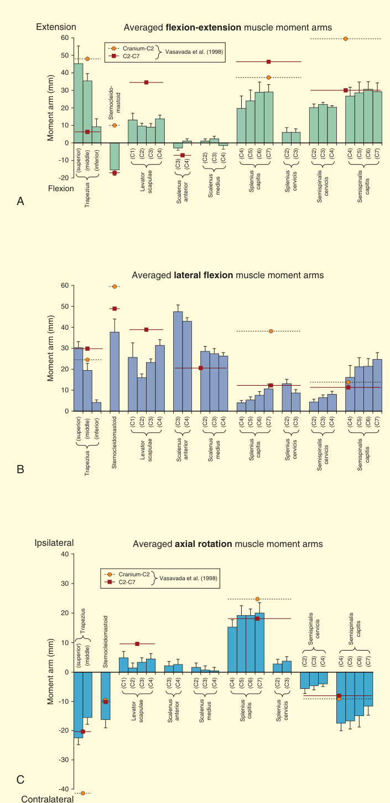